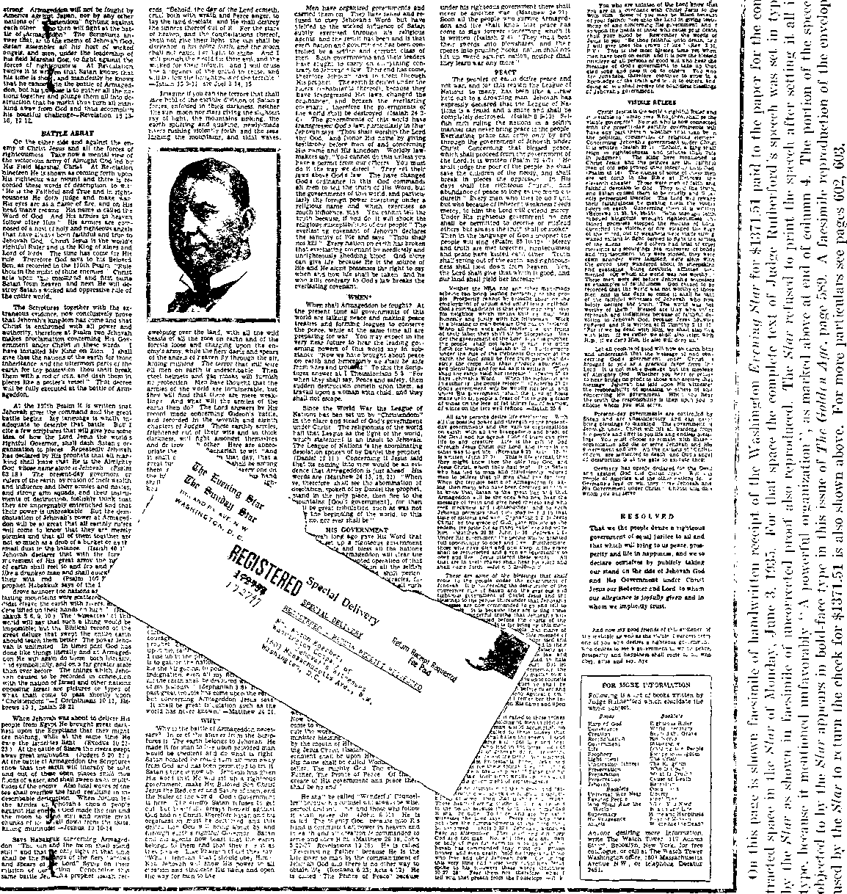

A JOURNAL OF FACT HOPE AND COURAGE
iiiiiiiiiiiiiiiiiiiiiiiiiiiiiiiiiiiiiiiiiiiiiiiiiiiiiiiiiiiiiiiiiiiiiiiiiiiiiin
this issue published specially for American citizens
An address by Judge Rutherford broadcast to all nations
RADIO
Who shall control it?
IIIIIIIIIIIIIIIIIIIIIIIIIIIIIIIIIIHIIIIIIIIIIIIIIIIIIIIIIIIIIIIIIilllllllllllll
every other WEDNESDAY
five cents a copy one dollar a year Canada & Foreign 1.25
Vol. XVI ■ No. 411 June 19, 1935
Who Rui.es America? . . . ,579
The Press of the Capital City . 580
Why Governments Failed . . . 587
What the Papers Refused to Print 589
The Resolution Adopted . . . 598
Points and Argument . . . .COO
Two Interesting Letters Received
by Judge Rutherford
After His Sfeech .... C04
High Points of Judge Rutherford’s
Impromptu Address .... 581
Ignoring the News.....5S1
Who Controls America? . . . 582 Facsimile of Post Letter . . . 582 Facsimile of Star Letter
and Receipt.......583
What Is “Controversial Matter”? 583
Here and There About the World 605 Deportees, Yugoslavia to Hungary 605 Mexico Ridding Itself of Priests . 605 Japanese Fishermen at Los Angeles 605 Hint of a War with Japan . . . 605 Child Labor in England .... 605 Gag Rule in Austria.....605
Dr. Benes and the League . . . 605 The Death Time-Schedule . . . 606 Sleeping in the Raw.....606
Too Much Meat in Irish Free State 606 School for Indians in Ecuador . , 606 Tides in the Solid Earth .... 606 “Daily Diet of Lies”.....606
Horrors of the Pecs Coal Mine . . 606 Finland an Honest Nation . . . 607 Girls at the League Switchboards . 607 The Sexton of Comayagua . . . 607 Thirteen Bombing Outrages . . . 607 Socialists and the Inquisition . . 607
— ---- 11 ---- ... — . . ——----'
Published every other Wednesday by
GOLDEN AGE PUBLISHING COMPANY, INC.
117 Adams Street, Brooklyn, N. Y„ U.S.A. Clayton J. Woodworth President Nathan I'. Knorr Vice President
Charles E, Wagner Secretary and Treasurer
FIVE CENTS A COPY
$1 a year, United States ; $1.23 to Canada and all other countries.
Notice to Subscribers
Remittances : For your own safety, remit by postal or express money order. When coin or currency is lost in the ordinary mails, there is no redress. Remittances from countries other than those named below may be made to the Brooklyn office, but only by international postal money order.
Receipt of a new or renewal subscription will be acknowledged only when requested. Notice of expiration is sent with the journal one month before subscription expires. Please renew promptly to avoid loss of copies.
Send change of address direct to us rather than to the post office. Your request should reach us at least two weeks before the date of issue with which it is to take effect. Send your old as well as the new address. Copies will not be forwarded by the post office to your new address unless extra postage is provided by you.
Published also in Bohemian, Danish, Dutch, Finnish, French German, Greek, Japanese, Norwegian, Polish, Spanish, Swedish.
' Offices for Other Countries
British........34 Craven Terrace, London. W. 2. England
Canadian.......40 Irwin Avenue. Toronto 5, Ontario, Canada
Australasian . . . . 7 Beresford Road, Strathfield, N. S. W., Australia South African ....... Boston House, Cape Town, South Africa Entered as second-class matter at Brooklyn, N. Y., under the Act of March 3, 1879.
1 --- ■ ■ ■■ ■ ■ »(2xv»
Volume XVI Brooklyn, N. Y., Wednesday, June 19, 1935 Number 411
Are you in favor of America being ruled by her own people? Or shall the nation be ruled by the FOREIGN POWER from Vatican City, Rome?
Why the Washington Star and the Washington Post choose the side of ROME.
Every American should carefully read Judge Rutherford’s speech “Government” and then say whether or not American newspapers are justified in suppressing any part of it.
Which side will the FCC and Congress support?
JEHOVAH’S witnesses had been in convention at Washington, D.C., for five days; a convention that is of world-wide interest, 20,000 or more of those devoted men and women were present; two of Washington’s leading newspapers, the Washington Post and the Washington Star, had contracted in writing for a money consideration to print the entire speech of Judge Rutherford, which was broadcast to the ends of the earth on Sunday June 2; the convention waited for hours to receive a copy of those papers before returning to their homes; at the last moment both of the above newspapers, yielding to some sinister influence, repudiated their contracts to publish the speech; Judge Rutherford immediately went before the convention and delivered an address that will long survive in the memories of those who heard it.
Immediately following that address the editor of the Golden Age magazine approached Judge Rutherford and propounded these questions: “Why is the Roman Catholic hierarchy so deeply concerned about keeping the people in ignorance of the Bible, and particularly in ignorance of the hierarchy’s crooked work? In this connection would you care to express an opinion as to the present religio-political situation in America ?”
He replied: “You will recall, probably, that more than two years ago in a public speech broadcast by radio I submitted proof that there was a movement on to have a dictator in America. Well, everybody can see that now, if they want to see anything. And soon they will see that it is the Jesuit organization of the Roman Catholic hierarchy that is behind that movement to rob the American people of all their rights. The Catholic hierarchy is stealthily moving forward to grab control of the United States government, and for that reason is pursuing the policy that all such unrighteous organizations pursue: to keep the people blind to the truth until it is too late.
“Every Catholic paper in the United States has boasted that the NRA program originated with the pope and that Mr. Roosevelt adopted it at the instance of the pope. Many other newspapers have quoted these boasts of the Catholic organization. The decision of the Supreme Court of the United States recently practically annihilated the NRA.
“The president gave an interview to the public press shortly thereafter and, piqued by the decision of the Court, he was unable to restrain his anger and clearly let it be known that he had repudiated the Jeffersonian principles of
the Democratic party that put him in office and now stands for centralization of power, dictatorship and against States’ rights. A movement is now being pushed at Washington to amend the Constitution of the United States, giving the federal government most of the power that the States now have, and thus further throttle the people.
“Many of the official family of the president are Roman Catholics and are agents of the Roman Catholic hierarchy. If the people should now be informed that the Roman Catholic hierarchy is trying to not only control their religious thoughts and convictions but at the same time deprive them of their liberty of speech, and thought, that would greatly hinder the efforts of the Roman Catholic hierarchy to get control of the government.
“From these facts does it not look as if Mr. Roosevelt and the Roman Catholic hierarchy have some definite understanding? This reminds me of the memorable proverb carved by James G. Blaine, referring to the Democratic party and the Roman Catholic hierarchy, to wit: “Rum, Romanism and Rebellion.” That might be amended now by saying: Rum, Romanism and Dictatorship.
“These circumstances appear to be very persuasive evidence that the Roman Catholic hierarchy and its American agents are desperately attempting to grab the job of dictator before the people know what is happening. Mr. Roosevelt seems to be the first candidate for that position. May I suggest that since his recent utterance about the Supreme Court’s decision and the States’ rights, and his close affiliation with the Roman Catholic hierarchy becoming well known, the toboggan slide has been drawn up before the White House. It might be interesting to watch it start down the incline.
“I am not interested in politics, but I am sure there are millions of loyal American citizens who love the principles of the Declaration of Independence and of the Constitution and many of them will be asking: ‘Shall America be ruled by the people, or by a few selfish men in the interest of an entrenched and foreign power, which is inimical to the liberties that the American people have long enjoyed?’”
The press of Washington, as of all other great cities of the United States and of “Christendom”, is in the hands of Big Business. It is operated not at all in the interest of the people, but wholly for predatory interests.
Fear to displease the Roman Catholic hierarchy has whipped the press into complete subjugation to a handful of priests, and priest and press hide behind the slogan: “We love peace and will print nothing that is controversial.”
It requires the help of Jehovah God to see the two organizations, His own and that of the Devil. Jesus saw them plainly, and took His stand wholly on the side of Jehovah. He could honestly say of Jehovah God, “I do always those things that please him”; and Jesus could also honestly say, “The prince of this world cometh, and hath nothing in me.”
Jehovah God created man, originally, with a desire to be truthful and to do right, and this desire persists in the hearts of many. Such are astonished when they first discern that “the god of this world” “is a liar, and the father of it”, and that ‘the whole world lieth in the wicked one’ and are “taken captive by him at his will”.
There was a time when the American press was somewhat interested in news. That time has passed. The desire of the press for money has overwhelmed its judgment. “The love of money is the root of all evil.” The press has determined that henceforth Jehovah’s witnesses shall see its face no more; that is, shall be denied a just and fair place in any news report, even when, as at Washington, they occupy the center of the stage.
Judge Rutherford knows, as do all others of Jehovah’s people who were at the Washington convention this month, that the Devil has sent forth word from his unseen spiritual realm that the time has come in America, as in Germany, to openly scoff at the name of Jehovah God, Creator of heaven and earth. The press is the Devil’s mouthpiece. The Roman hierarchy controls the press.
Not one of the 20,000 who heard Judge Rutherford’s forceful, manly, brilliant address at the Washington Auditorium Monday afternoon June 3 will ever forget it. It was the address of a powerful man, a determined man, an angry man, a witty man; and it was a tremendous “hit” not advertised on the program, and entirely unexpected.
(A full report of the entire convention will appear in The Golden Age for July 17, 1935, No. 413.)
THE only excuse for publishers to exist is to publish the truth. People in general are more ignorant of the Bible and know less about the Bible than anything else under the sun, due to the lack of truthfulness of the clergy.
In ancient times Jehovah God commanded that His people, the Israelites, must be made familiar with His Word. It was the duty of the priests to read the law and the prophecies to the people regularly. In this duty the priests became negligent, got to teaching the people their own ideas, and thus fell into the Devil’s snare.
The influence of Jesus and the apostles lasted but a short time. The place in the hearts and minds of the people which properly belongs to Jehovah God, the clergy again usurped.
When the forefathers of the American people fled across the Atlantic they did it that they might have the privilege of freely searching the Scriptures and of freely worshiping Almighty God by telling to others whatever of truth they could learn from His Word. But for this attitude on their part, the Constitution of the United States would never have come into existence. It would be well for some of the American statesmen of the present day to remember the words of one of those earlier statesmen: “As for me, give me liberty or give me death.”
Today in Washington Jehovah’s people are witnesses, and they have also borne testimony, that Jehovah God, more than three thousand years ago, pointed out through His prophets, and particularly in the prophecy of Ezekiel, that at this time the peoples of earth would be ruled by three elements all working in essential harmony: One, religious; one, commercial; and one, political.
You have studied those prophecies. You remember the explanation; and now you see their fulfillment. We have reached the climax, the turning point. Falsehood has long prevailed; but it must go. In its place and stead righteousness and truth shall be everywhere.
Unmanfully, the Washington newspapers have descended to personalities. They have tried to convey the impression that I am a “great man” with a hypnotic spell over the 20,000 people who are here. There have been many gibes about my person.
Why should such things be put in the papers?
Because those responsible for filling the newspaper columns must put in something to hold their jobs, and because they do not know anything about the Bible. The reason they have never learned anything about the Bible is, because the priests or clergymen do not know anything about the Bible and have not taught the people the truth.
Yesterday real news “broke” at Washington. The entire earth was reached with the message given here on the subject “Government”. The transfer of world dominion, from the Devil’s government to Jehovah’s Government, is the most important subject that can engage the attention of man.
“The fear of man bringeth a snare.” (Proverbs 29:25) The men operating these newspapers feared the Roman Catholic hierarchy and are in the Devil’s snare. Jehovah God commands to tell the truth. Newspapers under the control of the Devil’s Catholic hierarchy are afraid to tell the truth. Following yesterday’s speech from this platform, radiograms, cablegrams and telegrams came here from every part of the earth announcing that reception of the broadcast was excellent. That is the first time such a thing occurred on this earth. Heretofore, on international broadcasts “dead” spots were not unknown, as well as atmospheric and other interference; but on this occasion a message of greatest importance to humanity was clearly heard almost around the world. Now, was that news ?
It is well known that if the reporters had gone back to the higher-ups of the newspapers with this story just as it is, the editors would have blue-penciled it. Nor would the editors have done this because they wished to do it; but, like the reporters, they are working to make a living. Over them are the high-salaried men who never did anything for mankind and who are bossing the job. And over those higher men (though they do not know it) is Gog, the prime minister of the Devil; and over Gog is Satan himself.
What I have said during the past year before the Federal Communications Commission is that a knowledge of the truth as set forth in God’s Word is the most important thing that can be brought to the attention of the people; and the people ought to have a chance to hear it. The Devil is against it, of course.
If the Catholic hierarchy were holding a big meeting in Washington, the newspapers would be filled with stories of peacocks strutting around in long robes and gold lace, with small boys carrying their trains. Pictures also, probably, of the postmaster general’s prostrating himself before one of those “birds” or kissing the hem of the “bird’s” lace petticoat. I would not want to be found dead in such a crowd. [This was punctuated throughout with screams of laughter and heartiest applause.]
Sometimes the Devil overplays his hand. I do not mean anything unkind. All creatures of earth are under the influence or control either of the Devil or of the Lord, whether they know it or not. The big newspapers are the propaganda sheets of Big Business and religion. Above all, they fear to displease the Roman Catholic hierarchy. They are accustomed to serving the Hierarchy generously and without charge. If a man really loves the Lord, that is no reason why he should have something for nothing. But when the Roman hierarchy puts on one of its international advertising campaigns, commonly called a “eueharistic congress”, the newspapers are literally full of the stuff. It is put in as news, and it is put in free.
When it became known that this convention was to be held at Washington, the local newspapers, the Post and the Star, solicited advertising and were very glad to take the money of Jehovah’s witnesses. We did not need the newspapers, but consented to pay the full rate for advertising and put the notices in.
Later it was suggested that the speech of June 2, on ‘ ‘ G overnment ”, be published in full in the local press. Five days ago an arrangement was entered into whereby the Washington Post agreed to print the complete text of the speech. The Post sent the following letter to Anton Koerber [see facsimile at right].
Koerber agreed and accepted. Immediately after the end of the speech on Sunday copy was furnished to the paper. The Post proceeded to set it in type, for the doublepage forms which had been specially prepared in the paper’s composing room the day before.
About seven o 'clock Sunday evening the general manager of the Post suddenly notified Mr. Koerber’s office that it would be necessary to cut out parts of the speech* on account of ‘an attack on the Catholics’ which the Post could not afford to publish. Upon being assured that Jehovah’s witnesses desired the entire speech to appear in the paper just as it had been broadcast throughout the world that afternoon, the general manager insisted that he must refuse to publish any of it. Immediately thereafter another contract was made with the Post to print 100,000 copies of the speech on plain news stock, without any identifying mark to show that the Post had done the printing. While the type composition was being completed late Sunday night for that special printing by the Post, a memorandum for the people of Washington also was being prepared, and that has been mimeo-* Set in bold type on pages 589-590.
WASWINOTONjD.C.
May 28, 1930
Mr* Anton Xoorber c/o Watch Tower and Bible Tract Society 1603 Massachusetts Avenue 1.
Washington, 9, C*
My dear Mr, Koerber:
Ccnfiraing our conversation of this norning la reference to th® double page advertisement yea desired published la The Washington Post on Monday, June 3:
The cost of this advertisement will bo S881.4S, lees tea per cant if the bill is paid before the fifteenth day of July*
It is undmrstood that the advertisement will relate to a "Bible Lecture* Aldi will bo broadcasted by Judge Rutherford, and followed by its publication la The Washington Post issue of Juno 3.
The two advertisements scheduled May 31 and June 3 have an additional charge of $142.80, subject to tho ton per cent discount*
Sie cost for furnishing you with ton thousand copies of The Washington Post of Juno 3 containing tho advertisement will bo $185.00.
I would appreciate a return letter accepting the terns as outlined in this coaanaicaticu*
graphed here today. From that memorandum I quote in part:
WHO CONTBOLS AMEBIC A?
The following facts will aid you to answer that question. Sunday June 2 Judge Rutherford delivered a speech at Washington, D.C., on “Government” and which speech was broadcast throughout the United States and to many foreign countries. The Washington Post entered into a written agreement to publish the entire text of that speech. . . .
The Post accepted the speech, read it, set it in type, and was about ready to go to press when some powerful influence suddenly caused the Post to repudiate its contract and to refuse publication in its regular paper. As an excuse for declining to carry out its contract to print the speech the general manager of the Post said : ‘ ‘ I have given instructions not to print the entire speech as we agreed, but we will print part of it if that portion which refers to the Vatican City at Rome and foreign power is deleted. I have marked that part that must be deleted.”
The Post then agreed to print the entire speech on its presses merely on sheets of paper without the name of the Post appearing thereon for a cash consideration of $400.00. The entire speech was in type form, proofread, and was going to press when the order came from some high-ups: “Do not touch that stuff at all.” And again the Post repudiated its contract. . . .
If the United States is in fact a democracy and the majority of the people are in control, and public officials are in fact the servants of the people and not the servants and under the influence of the aforementioned “foreign power”, the Post would certainly have carried the speech in its columns in fulfillment of its written agreement because the people desire the truth to be published.
It is a well-known fact that the Roman Catholic hierarchy is now trying to induce America to meddle in the affairs of its sister republic Mexico and to aid
the said foreign power in its unrighteous work in that country.
Why are so many Catholic hierarcliy agents holding high official positions in the American government? The hierarchy and its agents are directly interested in keeping the American people in ignorance of what Judge Rutherford’s speech states because they know it is the truth. No one else would be interested in deleting that part of the speech.
Does the Roman Catholic hierarchy through its agents in America exercise sufficient influence to induce Congress, who are supposed to be the servants of the people, to continue to ignore the right of American citizens to hear the truth ? Will Congress give any heed to the two and one-half million who have signed a petition to protect their interests in this respect? . . .
What part of Judge Rutherford’s speech would any loyal American citizen desire to withhold from the people?
Seventy-five thousand copies of this memorandum will be distributed this afternoon in Washington.
When the Post toppled, the Washington Evening
VA«K1l(«TQK9.e.
June 3, 1935.
Mr. Anton Koerber, Washington Company of Jehovah^ Witnesses. 1603 Massachusetts Avenue* M.W.* Washington* D.C.
Dear Sir:
We return herewith your check dated today for 11*371.51 to cover charge for two-page advertisement submitted at midnight last night for publication in The Star today.
All advertising for The Star Is accepted subject to approval of the management and the right to reject* discontinue or omit any advertisement is eapressly reserved.
We regret that advertising containing controversial matter is not acceptable* and we are* therefore* returning your check.
Very truly yours*
Business Manager*
Fleming Newboldsp Enclosure
Star still expected to shine on Monday with a complete double-page report pf the Sunday afternoon lecture.
Shortly after the end of the address Sunday afternoon, the advertising representative of the Star telephoned the Washington Watch Tower headquarters to say that he had attempted to reach the Washington Auditorium to hear the speech but, for the mass of people who had turned out for the same purpose and who had not been able to get within blocks of the Auditorium, he had been compelled to sit in a park and listen to it. He urged again that the Star be permitted to run the lecture as a paid advertisement.
The agreement was made, and the money actually *paid in advance; but at length, though they had ten or more men working on it, they sent word that they could not afford to publish what I had said about the unholy ‘foreign power’.
The poor newspapermen are afraid of the roosters who call themselves “reverends”. Until recently these “reverends” had been taking out of Mexico thirty million dollars a year that the people need for their education. I got that information from one of Mexico’s judges in Mexico City.
These same ‘ ‘ reverends ’ ’ who took that money out of Mexico would now have a distinguished American official offend Mexico, and embroil this country in difficulties with all South American republics, by using the United States as a cat’s-paw to pull its chestnuts out of the fire.
The Star sent word that it could not publish controversial matter. It did not say in so many words that it was in mortal terror of the Roman hierarchy’s boycott, but that was the truth. It regretfully lost over a thousand dollars rather than to lose the many thousands it would lose if it gave offense to America’s enemy on Vatican Hill.
Are you in favor of free speech, or do you want Rome to rule America? Not a newspaper in Washington has the courage to reproduce the address which I gave here yesterday. In Jeremiah’s prophecy, 51st chapter, 30th verse, he said that is exactly what would come to pass. They would be ‘like women’. They would refuse to come out and fight.
* See facsimile of check on this page; also letter of the Star returning the check.
The Roman Catholic hierarchy wants to grab absolute control of the United States government. If it had not been for the Supreme Court’s declaring the NRA unconstitutional, we would have had a complete dictatorship in the United States within two years.
How does it happen that many of the more important offices in the government today are held by agents of the Roman hierarchy, that “foreign power”? Are there not enough real, loyal American statesmen, so that America can get on without having one man over in Rome dictate the policy of this government?
In the most malicious and un-American manner possible the Roman Catholic hierarchy has exercised its full power against Jehovah’s witnesses, and used all its influence to put them off the air. It also used all its influence with Congress to persuade that body to ignore the greatest petition ever offered to it signed by two and a half million people. Why is it that Congress has been so subjugated to Rome that it has to get the ear of the postmaster general before it dares to move?
The broken contracts of the Post and the Star make valuable advertising matter. These people under the control of the Roman hierarchy think they are going to get us out of this town with shamed face.
Because we were willing to pay for the publication of the Sunday discourse that the people might learn the truth, and because the Roman Catholic hierarchy has prevented this, they are now chuckling with the thought that they have defeated our efforts. They have overplayed their hand. Their crooked work in causing the repudiation of contracts will result in advertising Jehovah’s witnesses advantageously to more than ten times the value of the mere publication of the speech, and that will be another occasion for Jehovah to laugh at them as He says in Psalm two: ‘He that sitteth in the heavens shall laugh, and shall have them in derision.’
How did the ‘unholy city’, situate on the hill in Washington, learn that the Post and the Star were to publish my speech and get that information in time to stop it ? I suggest that in every big organization in America, newspapers and all, the Roman Catholic hierarchy has some secret agent planted to keep them informed about what is going on.
Surely intelligent men such as edit these two great newspapers would have known when they first read the copy that it was neither libelous nor an unjust attack on anyone to publish the statements therein made. But some representative of the hierarchy got the information through to Big Business, probably to the postmaster general first, and at once the brakes were put on.
How does it happen that practically all the postmasters that are appointed are agents of the Roman Catholic hierarchy? Why is it that members of Congress are so anxious to have the approval of the “distinguished” postmaster general before they act? The more you uncover this thing, the higher the stench arises, and every honest man will cry out: “Shall we be governed by our own people, or shall we be governed by an Italian who lives in Rome?”
GOVERNMENT
(The full text of Judge Rutherford’s Washington radio speech)
rpHE EARTH and its fullness belong to Jehovah God. (Psalm 24:1) He created it for man and created man to dwell upon the earth forever in prosperity, peace and happiness. The earth can be properly and justly governed only in harmony with the will of Jehovah. All righteous power and authority proceed from Him. No government organized and carried on by men contrary to the will of Jehovah God can bring peace and prosperity to the people. Jehovah has given men the opportunity to establish good government amongst themselves. Men have failed. The nations of earth are now in dire extremity.
At the capital city of America it is my privilege to speak today, and by the grace of Jehovah this message may be heard throughout America, Europe, Africa and the isles of the sea. No attempt will be made on this occasion to give advice to the men who hold the offices as rulers of the people. Such advice, if given, would not be heeded. This is proved by the fact that heretofore notice and warning have been given to the rulers of the earth, which has not only gone unheeded by them but which they have spurned and treated with ridicule and contempt.
Immediately before God destroyed the first world power that governed the earth He sent His messengers to give notice and warning to the rulers thereof. That message was contemptuously cast aside, Jehovah was defied, and His name reproached, and then God directed His messengers to turn to the common people. (Exodus 5:1-4) Similar conditions now obtain, for the reason that the last world power to rule the earth is tottering to the fall. Disregarding the Word of God the blinded governing powers are leading the blinded and oppressed people, and all such are headed for the ditch. There is hope now only for those people who hear and give heed to the Word of Jehovah.
This message today is addressed to all people of good will regardless of nationality, creed or previous condition of servitude; to those persons who have an honest and sincere desire to have and to enjoy a government of equal and exact justice, administered unselfishly, honestly and righteously for the general welfare; to the people who sincerely desire and pray that the will of Jehovah God may be done on earth even as in heaven. I am persuaded that there are millions of such people who are held in bondage by the oppressive powers that now rule the earth. Such people of good will, by the grace of God, must have an opportunity to hear His Word, and He has made such provision.
I shall not speak the wisdom of men, because such wisdom has accomplished no lasting good to the people. All the treasures of knowledge and true wisdom are found in the Bible, which is the Word of God. I call your attention to the expressed wisdom of God’s Word which, when set alongside the well-known physical facts, will enable you to understand what is the right course to take. Knowledge of these truths is now indispensable to all who will survive the great tribulation that is impending and immediately about to fall upon the world. I bid you therefore to follow carefully this speech and then to exercise your right of choice and take whatsoever course you may desire. The sole purpose here is to bring to your attention the true cause of the unhappy condition now prevailing on the earth and point you to the only possible way of ever having and enjoying a government that will fully satisfy the desire of every honest person.
Centuries ago, upon the plains of Shinar, men organized their first government, and in doing so they defied Jehovah God, set up a creature above the Creator, and gave praise to man and reproached the name of Almighty God. That government fell. Ancient Egypt was the first world power. That government defied Jehovah. God and cruelly persecuted and oppressed those people who served God. That world power was destroyed. The course taken by that government and its untimely end foreshadowed the course and untimely end of the governments that now rule the earth. In their order ancient Egypt was followed by other world powers, to wit, Assyria, Babylon, Medo-Persia, Greece and Borne, all of which pursued a course contrary to the Word of Jehovah God, oppressed the poor and wickedly persecuted those who told the truth. All of those governments went to destruction. Today the nations called “Christendom” dominate the peoples of the earth. These nations claim to be Christian nations, but they proceed exactly contrary to the teachings of Jesus Christ. In practically all of these nations there is now a dictator in the saddle who in turn is guided and controlled by a selfish, subtle and concealed power, and which controlling and governing power tramples upon the rights of the people, puts forward falsehood for truth, and gives no heed to the Word of Almighty God. In all of such governments religion is employed as a means to keep the people in ignorance of Jehovah’s truth which is set forth in the sacred word of the Bible. The religions which are practiced by the governments of earth are diametrically opposed to God and to Christ Jesus. Claiming to be what it is not, and putting forward itself in the name of Christ, religion is the most effective means employed to deceive and mislead the people.
Long ago God caused to be recorded in the Bible the description of the conditions that would be manifest in the last days; and I ask you to bear witness to the fact that the conditions described in the Lord’s Word exist right now and which conditions prove that we are in the “last days”. That scripture, recorded at 2 Timothy 3:1-5, says: “This know also, that in the last days perilous times shall come. For men shall be lovers of their own selves, covetous, boasters, proud, blasphemers, disobedient to parents, unthankful, unholy, without natural affection, [covenant]-breakers, false accusers, incontinent, fierce, despisers of those that are good, traitors, heady, highminded, lovers of pleasures more than lovers of God; having a form of godliness, but denying the power thereof.”—2 Timothy 3:1-5.
Everyone knows that this is a time of great peril and that the people are in dire distress and in great perplexity. They have lost confidence in those that rule because they have been bo often deceived, misled and oppressed. The Word of God shows that greater peril upon the world will come in the very near future and of that peril the common people must be warned.
The testimony of the keenest statesmen of the world today is that the governments of the earth are not only imperfect and unsatisfactory, but are generally corrupt. It is freely admitted that all the efforts of men to establish a just and satisfactory government have signally failed. All must admit that the combined wisdom and counsel of men have failed to set up and administer a satisfactory government. There must be a primary reason for such failure. There is a reason, and the full and complete explanation is stated in the Bible, which is now due to be understood because God’s time has come to make it understandable. When you see that man’s counsel has failed, then why longer follow that imperfect and unwise counsel? All fair-minded persons, whether they be Catholic or Protestant, Jew or infidel, must, if they would find the right way, cease fighting each other, cease following the lead of selfish and imperfect men, and sincerely, calmly, soberly and honestly endeavor to learn what is set forth in the Word of Jehovah and obey Him. Satan the Devil is the common enemy of man and he uses selfish and prejudiced men to keep the people in ignorance of how the desirable government can be had and enjoyed by mankind. Satan, by employing fraud and deceit, has kept, and now would continue to keep, the people in ignorance of the truth for the reason, as Jesus said, that the truth alone shall make you free. Bear with me, then, if you will, while I recount in brief the Bible reasons for the cruel and oppressive conditions that now obtain throughout the earth.
God created man and placed him in a beautiful and perfect home. He made His spiritual son Lucifer the invisible overlord of man and of the earth. Lucifer rebelled against Jehovah, led men and angels into that rebellion, and then challenged Jehovah God to put men on earth who would remain true and faithful to Him when put to the most severe test. God sentenced Lucifer to death and changed his name to that of Satan, Dragon, Serpent, and Devil. To be sure, God could have immediately executed that sentence of death by destroying Satan, but, had He done so, Satan would have had no opportunity to prove his boastful challenge and there would have been no opportunity to put men to the crucial test to prove their integrity toward Jehovah. God accepted the challenge and permitted Satan thenceforth full liberty to prove his challenge, and for this reason God said to Satan, as is recorded in Exodus 9:16: “But for this cause have I allowed thee to remain, in order to show thee my power; and in order that they [my witnesses] may proclaim my name throughout all the earth.” (Exodus 9:16, Leeser) Satan was given a limited time within which to prove his boastful challenge, and when that time ends Jehovah must make known to all His own supremacy and vindicate His own word and name and must cause His witnesses to proclaim throughout the earth His name that the people might know who is their Friend and Life-giver and from whom their blessings flow.
Jehovah God then gave His word that when His due time should arrive He would set up a righteous government and that by and through that government Satan’s wicked rule and power must be destroyed. Jehovah decreed that at the proper time all mankind should have the opportunity to choose between Satan and Jehovah, and that those choosing to obey and serve God’s righteous government could have everlasting life and all attending blessings. Jehovah God is supreme, and His law is above the laws of man. His purposes cannot fail. He having given His word to do a thing, it is absolutely certain that in due time He will accomplish that thing, regardless of what men may do. Therefore He caused His prophet to write: “I have purposed it, [and] I will also do it.” (Isaiah 46:11) “So shall my word be that goeth forth out of my mouth; it shall not return unto me void; but it shall accomplish that which I please, and it shall prosper in the thing whereto I sent it.” (Isaiah 55:11) It is therefore of paramount importance to the people that they learn what is the purpose of Jehovah God; and that purpose is set forth in the Scriptures now due to be understood. Satan is the one who would keep the people in ignorance of that purpose. Now the time has come when the people must have opportunity to hear the truth, and then each one for himself must decide whether he wants to follow Satan and his agents and die, or whether he will obey Jehovah God and live.
Jehovah God gave to man Uis Word, the Bible, for man's guidance. But men have failed to follow it. Satan, by employing fraud and deceit, has induced men to create and follow a system of formalism, falsely labeling it “divine worship” and religion, and the practice of such religion is indulged in by every government of “Christendom”. To those who would learn, and go in the right way, Jehovah has said: “Trust in the Lord with all thine heart; and lean not unto thine own understanding. In all thy ways acknowledge him, and he shall direct thy paths.” (Proverbs 3:5,6) Disregarding such divine injunction, men have organized governments and followed their own devices. Disaster has resulted. In the organization and conduct of governments men have chosen to honor man and not God, and for that reason many men have fallen easy victims to the subtle influence of Satan.
This point is particularly emphasized in the history of the Jews and their government. To that people God gave His law and outlined for them a perfect form of government; but instead of following Jehovah’s guidance, that people turned to their own selfish devices. Their priests and clergymen were commanded to teach to the people the truth of God’s Word, but instead of doing so they created a form of worship and gave glory and adulation to men. It was the Devil who overreached them and induced them to take that course, and the Devil was able to do so by reason of the selfishness of men. That was a test put upon the JewTs, and as a nation they failed, only a few men standing the test. Referring to this matter the Scriptures, at Romans one, state: “Because that, when they knew God, they glorified him not as God, neither were thankful; but became vain in their imaginations, and their foolish heart was darkened: professing themselves to be wise, they became fools. . . . Who changed the truth of God into a lie, and worshipped and served the creature more than the Creator, who is blessed for ever. Amen.” (Verses 21,22,25) The Devil thus turned that people away from God, and their government was destroyed. The prophecies expressly show that the very forces that led the Jews into error and caused their downfall would likewise lead “Christendom” into error and cause her downfall and the destruction of all of her governments.
Necessarily truth is controversial, because the truth exposes error. I do not choose to have controversy with any person or group of persons. But I ask you, Which is the most important for the people: To tell the truth, which marks out the only way to life and happiness, or to hide the truth and let the people ignorantly rush on to destruction? God commands that now His truth must he told in order that the people may have an opportunity to intelligently choose their own destiny. God has commanded those who teach the Bible to keep themselves unspotted from the political affairs of this world and to confine themselves to the teaching of His Word. (James 1:27; 4:3,4) Exactly contrary to the Scriptural injunction, as everyone well knows, the clergy of all the religious organizations are today more or less indulging in the politics of the world and are failing to teach the people what is the Word of God. Each session of the Congress of the United States is opened with a formal prayer uttered by some clergyman; but is the Bible advice sought or used as a guide for those lawmakers? On the contrary, the laws of earthly governments are now invoked to prevent the people from hearing what is set forth in the Bible. Attention is called to these derelictions, not for the purpose of provoking controversy, but that the common people may see the importance of now turning to the Word of God and following its advice and not the advice of imperfect men.
Why is there such great opposition to proclaiming to the people the truth as set forth in the Bible? The answer in brief is this: For centuries Satan has been the invisible ruler, or “god of this world” (2 Corinthians 4:3,4; 1 John 5:19), is violently opposed to the truth, and is striving to turn all men from the truth and against God, as he boasted he could do. Jehovah declared His purpose to give to the people a righteous ruler, who should destroy Satan and his power and lead honest people in the right way. To carry out His expressed purpose Jehovah sent Jesus to the earth, primarily to bear testimony to the truth, and, secondarily, to shed His own lifeblood as the redemptive price for man, to the end that all men who will take their stand on the side of Christ and God might gain life everlasting. Satan sought to kill the man Jesus, and to that end Satan employed the priests and clergymen of that time and they put forth their efforts to kill Him. Why did they take that course? Was it because Satan and his agents were afraid that Jesus would do them bodily harm? No, not for that reason, but because Jesus told them and the people the truth and Satan wished to prevent the people from knowing of God's purpose to establish a righteous government in the earth and open to them the way to life. Satan blinded the clergymen and used them as his instruments to accomplish his wicked purpose. To those blinded clergymen Jesus said (John 8:40-44): We seek to kill me because I have told you the truth, ... Ye are of your father the devil, and the lusts of your father ye will do; he was a murderer and a liar from the beginning.’ When a council of clergymen met to consider what they should do to Jesus to prevent Him from teaching the truth to the people, it is written that the high priest presiding at that council used these words, to wit: “It is expedient . . . that one man should die for the people, and that the whole nation perish not. . . . Then from that day forth they took counsel together for to put [Jesus] to death.”—John 11:50-53.
Because Jesus was God’s appointed One to set up a righteous government on earth, and because He spoke the truth of Jehovah’s purpose, He suffered crucifixion at the hands of Satan and his earthly agents. (John 18:37; 19:18) But Jehovah then manifested His supreme power by raising Jesus from the dead and exalting Him to the highest place in the universe, and God commands that in due time everything that lives shall bow to Jesus and confess that He is the Lord and the rightful Ruler of the world, and this to the glory of God. —Philippians 2: 9-11.
Of all the doctrines of the Bible, that which is magnified as of greatest importance is the doctrine concerning the government of God under Christ, which shall rule the world in righteousness. Jesus repeatedly told His disciples of His coming government and that after His resurrection He would come again and set up that government in His Father’s name. He admonished them to continuously pray for the coming of that government, that the will of God might be done on earth as in heaven and that the people might have a chance to live in peace and happiness. (John 14:1-3; Matthew 6: 9,10) From then till now every person who has honestly and sincerely advocated that coming government of righteousness has suffered persecution at the hand of Satan and his earthly agents; and that persecution has reached a climax since the year 1914, and the reason therefor is made plain in the Scriptures. Jehovah fixed a time during which Satan should have uninterrupted opportunity to prove his boastful challenge that he could turn all men away from God, and that fixed time ended officially in 1914, marking the end of the uninterrupted rule of Satan as the god of this world. It was then that Jehovah placed Christ Jesus upon His throne of authority and sent Him forth to begin His rule. Immediately the great issue became, Who shall rule the world? Shall Satan continue his misrule, or shall Jehovah’s righteous government be put in operation ? All people must now choose to remain with Satan oi' to take their stand on Jehovah’s side. The question of supremacy and rulership now must be settled, and once and for all time.
The Lord Jesus referred to this very time when He commanded His true followers to proclaim to the peoples of the nations the truth concerning His government; and for telling the truth, in obedience to His commandment, He said, “ye shall be hated of all nations for my name’s sake.” (Matthew 24: 9) Not for the purpose of provoking a controversy, but in obedience to God’s commandment, and that you might know the truth, I must now recount to you the facts which show the fulfillment of these prophetic utterances of the Lord Jesus.
Since the World War a little company of men and women, who are wholly devoted to God and His government, have in obedience to the Lord’s commandment carried the message of truth concerning His kingdom to the people, and because they have done so they have been and are hated and persecuted in all nations of “Christendom”. As it was in the days of Jesus, so it is now with His faithful followers; therefore such persecution is induced and carried on chiefly by religionists, even as Jesus foretold it would be. (John 15:18-20) Such religious leaders exercise great influence in the political councils of the governments of this world; and that of itself is conclusive evidence that they are the enemies of God and His government, because it is so written in the Scriptures, at James 4:4. At every period of the world’s history the facts show that it has been and is religionists that induce the political element to persecute those who proclaim the truth of God’s Word.
A powerful organization, which came into existence fifteen centuries ago, and which organization is foreign to America and has always opposed American institutions of freedom, and which has always been given to inquisition and persecution, operates under a religious name. It maintains its seat of government at Vatican City, Rome, and extends its selfish influence to every nation under the sun. It exercises today a tremendous influence in the political councils of America, both in the legislative halls and in the law-enforcement part of the government. The head of that foreign power issues an order that everywhere in the earth the work of Jehovah’s witnesses must be crushed, and at once a vigorous campaign is launched to accomplish that purpose in America and in the other nations of the earth. That same foreign power orders that Jehovah’s witnesses be denied the use of the radio facilities to broadcast the message of and concerning Jehovah’s government. Immediately a vicious campaign of slander, threats, boycott and other means of coercion is begun, and carried on in America, to thus deprive the people of an opportunity to hear the truth of God’s Word.
In proof of the influence exercised in America by that foreign power I cite this indisputable fact, to wit: Millions of American citizens petitioned the Congress of the United States to take action to prevent that foreign and sinister power from interfering with such proper use of the radio facilities, but, instead of giving heed to the petition of American citizens, the Congress has side-stepped the issue and failed to take any action whatever to safeguard the interests of the American people from this foreign foe. If the spirit that controlled and moved the statesmen of young America, leading those men to write the Declaration of Independence and the Constitution, now moved and controlled the men of the present-day Congress, some man would rise on the floor of that lawmaking body and say to the agents of such foreign power: “Hands off, and cease interfering with the American people in the exercise of their constitutional and Godgiven rights to speak the truth and worship Almighty God as they see fit.” Freedom of speech is the God-given and an inalienable right of men, and no political body can properly and justly prevent the exercise thereof; and woe be unto the organization, political, religious or otherwise, that does attempt to prevent or prevents the free and uninterrupted service and worship of Almighty God.
That sinister and cruel influence is now being vigorously exercised in Italy, Austria, Germany, France, Japan, Canada and in America, and, in fact, in all the nations of “Christendom”, and exercised against the witnesses of Jehovah to prevent the people from hearing the truth of and concerning the government of Jehovah God which is now at the door. Thousands of men and women today are languishing in prisons because in obedience to God’s commandment they have gone about amongst the people telling them of and concerning His righteous government. Imprisonment is not only inflicted upon such faithful men and women in Germany and in Canada, but the state of New Jersey, the constitution of which state guarantees freedom of worship, likewise indulges in the imprisonment of such men and women because of their faithfulness to God and Christ Jesus. The influence and power that moved men to cruelly crucify Jesus Christ now moves other selfish men to crush those who are carrying the message of God’s truth to the people, and the Devil is the invisible power that fathers and pushes forward such wicked persecution. This he does because he is desperately fighting against God’s kingdom of righteousness, which is the only hope of the world.
But Jehovah’s witnesses are in no wise discouraged by reason of such persecution. They know what will be the final outcome, because Jehovah has plainly stated in His Word what the end shall be. They are not concerned with the political affairs of this world, because they are wholly devoted to God and to His government. Based upon the plain Word of Jehovah and His dealings with His enemies, I now say to you that no government can endure which by law or otherwise prevents the free proclamation of the message of and concerning Jehovah’s government of righteousness. A government that indulges in the persecution of Jehovah’s witnesses, or connives at or tacitly approves others in such persecution and oppression of the witnesses of Jehovah, can not and will not long endure. Jehovah has commanded His witnesses to proclaim His name and His kingdom, and to those who oppose He says: “Touch not mine anointed, and do my [witnesses] no harm.” (Psalm 105:15) All those who oppose God and His kingdom are His enemies, and all such He declares He will destroy. (Psalms 21: 8,9; 145: 20) Since the days of ancient Egypt all the nations that have opposed God and persecuted His witnesses have fallen into the dust; and now there is stronger reason than ever that all the nations of “Christendom” shall be destroyed, because the day of Armageddon is at hand.
And what is Armageddon? The Scriptures answer it is the battle of the great day of God Almighty and at that battle no nation shall escape. (Revelation 16:13-16; Jeremiah 25:29-35) Today all nations are feverishly preparing for war. In every nation there is a wasteful and extravagant expenditure of money to build war machines and to manufacture ammunition and other instruments of destruction. The selfish manufacturers of guns and ammunitions are now reaping a material harvest by the permission of their respective governments. But their day of prosperity soon will end. Their dreadful machines will accomplish nothing at Armageddon. Neither will material wealth nor political influence furnish any protection at Armageddon to those who are now the mighty and the strong. Armageddon will not be fought by America against Japan, nor by any other nations of “Christendom” fighting against each other. Who, then, will fight at the battle of Armageddon? The Scriptures answer that, as to the enemy of Jehovah God, Satan assembles all his host of wicked angels, and men, under the leadership of his field marshal Gog, to fight against the forces of righteousness. At Revelation twelve it is written that Satan knows that his time is short; and manifestly he knows that he cannot win the battle of Armageddon, but his purpose is to gather all the nations together and plunge them all into destruction that he might thus turn all mankind away from God and thus accomplish his boastful challenge. —Revelation 16:13-16; 12:12.
On the other side and against the enemy is Christ Jesus and all the forces of righteousness. Take now a mental view of the victorious army of Almighty God led by His Field Marshal, Christ. At Revelation nineteen He is shown as coming forth upon His righteous war mount, and there are recorded these words of description, to wit: ‘He is the Faithful and True, and in righteousness he doth judge and make war. His eyes are as a flame of fire, and on his head many crowns. . . . His name is called the Word of God. . . . And his armies in heaven follow after him.’ His armies are composed of a host of holy and righteous angels that have always been faithful and true to Jehovah God. Christ Jesus is the world's rightful Ruler and is the King of kings and Lord of lords. The time has come for His rule. Therefore God says to His beloved Son, as recorded in the 110th Psalm: “Rule thou in the midst of thine enemies.” Christ acts upon this command and first ousts Satan from heaven, and next He will destroy Satan’s wicked and oppressive rule of the entire world.
The Scriptures, together with the extraneous evidence, now conclusively prove that Jehovah’s kingdom has come and that Christ is enthroned with all power and authority; therefore, at Psalm two, Jehovah makes proclamation concerning His government under Christ in these words: T have installed my King on Zion. . . . I shall give thee the nations of the earth for thine inheritance, and the uttermost parts of the earth for thy possession. Thou shalt break them with a rod of iron, and dash them in pieces like a potter’s vessel.’ That decree will be fully executed at the battle of Armageddon.
At the 107th Psalm it is written that Jehovah gives the command and the great battle begins. My language is wholly inadequate to describe that battle. But I cite a few scriptures that will give you some idea of how the Lord Jesus, the world’s rightful Governor, shall dash Satan’s organization to pieces. Repeatedly Jehovah has declared by His prophets that all mankind shall know that He is the Almighty God, whose name alone is Jehovah. (Psalm 83:18) The presentday governors or rulers of the earth, by reason of their wealth and influence and their armies and navies, and strong-arm squads, and their instruments of destruction, foolishly think that they are impregnably entrenched and that their power is unbreakable. But the demonstration of Jehovah’s power at Armageddon will be so great that all earthly rulers will come to know that they are merely pygmies and that all of them together are not so much as a drop of a bucket or as the small dust in the balance.
(Isaiah 40:15) Jehovah declares that with the forward movement of His great army the nations of earth shall reel to and fro and stagger like a drunken man and shall quickly reach their ■wits’ end. (Psalm 107:27) His prophet Habak-kuk says of the Lord: ‘He . . . drove asunder the nations, and the everlasting mountains were scattered. . . . Thou didst cleave the earth with rivers, and the deeps lifted up their hands on high.’ (Habakkuk 3:6,9,10) The “wiseacres” of this world will say that such a thing would be impossible; but the Biblical record of the great deluge that swept the entire earth should teach them better. The power of Jehovah is unlimited. In times past God has done like things literally, and at Armageddon He will again do them, both literally and symbolically, and on a far greater scale than ever before. The things which Jehovah caused to be recorded in connection with the nation of Israel and other nations opposing Israel are pictures or types of what shall come to pass shortly upon “Christendom”.—1 Corinthians 10:11; Hebrews 10:1; Isaiah 28: 21.
When Jehovah was about to deliver His people from Egypt He brought great darkness upon the Egyptians that they might see nothing, while at the same time He gave the Israelites light. (Exodus 10:21-23) At the battle of Sisera the rivers swept away great multitudes. (Judges 5:20,21) At the battle of Armageddon, the Scriptures show, the earth will literally be split and out of these open places shall flow floods of water, and shall sweep away multitudes of the enemy. Also tidal waves of the sea shall overflow the land, resulting in indescribable destruction. When Joshua led the armies of Jehovah’s chosen people against His enemies God made the sun and the moon to stand still and caused great chunks of ice to fall down from the skies, killing multitudes.—Joshua 10: 10-14.
Says Habakkuk concerning Armageddon: ‘The sun and the moon shall stand still,’ and that the only light at that time shall be the flashings of the fiery ‘arrows and spears of the Lord’ flying on their mission of destruction. Concerning this same battle Jehovah’s prophet Isaiah records: “Behold, the day of the Lord cometh, cruel both with wrath and fierce anger, to lay the land desolate; and he shall destroy the sinners thereof out of it. For the stars of heaven, and the constellations thereof, shall not give their light: the sun shall be darkened in his going forth, and the moon shall not cause her light to shine. And I will punish the world for their evil, and the wicked for their iniquity; and I will cause the arrogancy of the proud to cease, and will lay low the haughtiness of the terrible.”—Isaiah 13: 9-11; see Joel 3:14,15.
Imagine, if you can, the terrors that shall take hold of the earthly division of Satan’s forces, enfolded in thick darkness, neither the sun, moon nor stars giving the slightest ray of light; the mountains sinking; the earth splitting and quaking; newly-made rivers rushing violently forth, and the seas lashing the mountains, and tidal waves sweeping over the land; with all the wild beasts of all the zoos on earth and of the forests loose and charging upon the enemy’s army, while the fiery darts and spears of the angels of heaven fly through the air, killing millions. The terror that will seize all men on earth is indescribable. Then steel helmets and gas masks will furnish no protection. Men have thought that the armies of the world are invulnerable, but they will find that these are mere weaklings. And what will the armies of the earth then do? The Lord answers by His record made concerning Gideon’s battle, and recorded in the seventh and eighth chapters of Judges. These earthly armies, frightened out of their wits and in thick darkness, will fight amongst themselves and destroy each other. Here are appropriate the words of Zechariah, to wit: “And it shall come to pass in that day, that a great tumult from the Lord shall be among them; and they shall lay hold every one on the hand of his neighbour, and his hand shall rise up against the hand of his neighbour.” —Zechariah 14:13.
The surviving forces of Satan’s earthly army ■will then attempt to destroy those who have taken their stand on the side of God’s government, and the Lord will smite them with His plague, concerning -which He says: ‘And this shall be the plague wherewith the Lord will smite all the people that have made war against his organization: Their flesh shall consume away while they stand upon their feet, and their eyes shall consume away in their holes, and their tongues shall consume away in their mouth.’ (Zechariah 14:12) That will convince them that Jehovah is fighting.
For long centuries Jehovah has held His
(Continued on page 594)
GOVERNMENT . . .
■iiirirmiiFiiiiiuiiiii-MiJiiiiinci—i.r -r—Wi--T------- trai«B!MinMa«n®BSiM^^ >bbm
HE EARTH and Sts fullness be’ong to Jehovah God (Psa.m 24 1 ) He credwell upon the earth forever In prosperitv. peace and happiness The earth can be properly and justly governed only in harmony with the will o* Jenoiah’ AU righteous power and authority proceed from him No gci eminent organized and carried cn bj men contrary to the will of Jehovah God can bring peace add pw-pe'hy to the people Jehovah has given men th? opportur.’tv to establlsn good government acenes' themselves Mn in dire extremity
At the Capital City of America It is my privi>r»e to speak today, and by the grace of Jthovah this message may be btard throughout America, Europe, Africa and the h'es of the sea No attempt will be made oct thj occasion to git* advice to the r.en who hold the offices as rulers of tho peop’e Such advice if given would not be heeded. This is pro- ed bv tne fact that heretofore notice and warning have been g ven ’ to the lulers of the ear*h wmeh has not only pone u 'heeded by then, with ridicule and contempt
Immediately before Cod destroyed the first world power that governed the earth He sent His rressenzers to give notice and warning to tfe ru>c« thereof That message who contemptuously cast aside. Jehovah wrj duled a”d his name reproached.
turn to the common people (Exodus 5 I-4 ) SIFiilar conditions now obtain for the rearon that the list world power to rule the earth is to tering to me fall Disregarding the Word of God the b.inded governing bow -ers we lead.ng t*’" blinded and oppressed people, and all such are beaded tor the ditch There Is hooe now only for those people who hear and give I.eed to the Word 4t Jehovah.
"Ehls message today is addressed to all peoples of good will, regardless of "nationality, creed or previous condition of servitude, to those perjens who have an honert and kJiccre desire to bale and to enioy a government of equal and exact Justice, administered unselftsh’y. honestly and righteously ter the general welfare, to the people who sincerely desire and pray that the win of Jehovah God may be done on earth even as Ln heaven I am persuaded that there are millions cf such people wiio are held In bondage by the oppressive powers that now rule the earth Such peoples of good will, by tia grace of God. must have an opportunity to hear His Word and h-e has made such provision.
I snail not speak the wisdom of me because rurh wisdom has accamphsp^ tailing jocci to the people Aft^L' ures of‘kr.ow'edge ana true/ fourid in the Bibie which/
Wisdom of Gods Wo along beside the we'l-»t\ will enable you to undri right course to take Kt truths b now IndispensatA survive the great tribulatk ■beading and inunediatelv abds the world. I bld you ‘he*eft carefully thL, speech and theii your right of choice and take \ rourae you may desire. The sofa here is to bring to jour attentionX tause of the uihaopy condJiien nL vailing pn the earth and point you \ onlv possible wav cf e*er having turn toying a government that will fully saL, the drel-e of every honest person
Centuries ago upon the plains of Shinai men organized their ti-rt government and in doing so they defied Jehovah God, set up a creature above the Creator and gave praise to man and reproached the nune,(f Almighty God. That government fell Ancient Egypt was t^e first world pdwer That government defied Jehovah God a id cruelly persecuted and oppressed those ocople who served God That world power was aestroved The coutm taken by that government and its untimely end foreshadowed the course and untimely end of the covemments that now rule the earth In their order ancient Egypt wax followed tey other world powers to wit Assyr.a Babylon Meao-Persla, Greece and Rome, *11 of which pursued a course contrary to the Word of Jehotah God. oopressed the bc« and wickediv persecuted those who told the truth All of those goreniments went to destructicn Today the nations MU*d "Chrstendcn dominate the peoples nt the earth TTese rations claim to be Christian nations but they proceed exactly contrary to the teachings of Jesus Chnst Tn practica’lv all of these nations there is mw a dictator in the saddle who in turn is milded and control’ed by a selfish subtle and concealed power, and which controLing end go-.eming power trample* upon the rignts of the peool-, puts forward falsehood for truth, and gives no heed to the Word of Almighty God In all of such governments religion is employed as a means to keen the people in ignorance of Jehovah* truth, which is set forth in the Hired Word of tn* H.Ne The religions which arc practiced by the go'err.inents of earth, are thamettteally opposed to God □nd to Cnnn Jesus Claim.ng to be what ft Is not and putting forward itself in the name of Christ, religion u the most effects e mans employed to deceive and mislead the people.
Long ago God canted to oe recorded in the Bible the description of the condition that would be manifest in the last the fact that the conditions described in the Lord's Word exist right now and which conditions prove that we are in the last days" That scripture, recorded at
II Timothy 3 1-5. says “This know also, that Ln Ihe last davs perilous tlm« snail come For men shall be lovers of their own sel.es, covetous, boasters, proud, blasphemers, disobedient to parents, unthankful, unhoiv. without natural affec-[co.enant] breaker:, fals- accuser*, incontinent, fierce, desplscrs of those that aro good, traitors heady, highmmded, lovers of pleasures more Vian Lovers cf God. having a form of gf*£iiness. but deryfng too power thereofH Timothy ’ 1-5,
Fveryone knows that this Is a tune of great peril and that the people ore in dire distress and tr. great perplexity. Thev have lost confidence in those that rule because they have been so often deceived, misled and oppressed The Word of God shows that greater peril upon the world will come in the ve*y ne*v future end of that pt'il the common people must be warned.
The testimony of toe keenert statesmen of tho world toda; is tnat the governments o( the ear'll are rot only imperfect and unsatjfac’ory, but tbst thev are generally ccmupt It is freely admitted that all the < 'orts of men to establish a )ust and satisfactory gu.’irrment bare slenahy failed Ail must airnit toat th? combined wisdom and counse. of mer b u.e faded to set up ard adn.’nftter a satisfactory government Tner' must be a primary reason for sueh failure There is a reason and Uie full a:.d <empiric explanation is stated in the Bible which ts now due to be understood because God’s time has come to make ft understandable When you that man’s counsel has fcile-d then why longer fol-fow Dial imperfect and unwise coud-srP All fair-tnirded persons, whether f’ev be Call olic or Prctc-itant, Jew or infidel, must if they uould find the rishi way, cease fighting each other, cease following th* lecri of selfish and imperfect •men, and s.r^ciciy, calmly, soberly and honestly endea or to learn what is set forth Ln the Word of Jehovah and obey hun. Eitan the Devil is the common enemy of nisn, and he uses selfish and prejudiced men to keep th- people in ignorance f how the desirab'e governmert can be ' and enjoyed by mankrnd. Satan ' ploying fraud and deceit hsx ip-now would continue to k-1 2'
tlons
In ignorance o( the tr as Jesus said, that--* crake you freez wili, while^2
.-Zmited time boastful chai-.Xlme ends Jehovah 'all His o» n sunremacy own Word and Name
throt _< the earth His name that the poopk. thlght know wh<j is thetr Friend and Life-giver and from whom their bless-tr.gs flow
Jehovah. God then give His word that when His oue time mould arrive Ke would set up a righteou* government and that bv and through th.it government Satan’s wicked rule and power must be destroyed Jehovah decreed that at the proper time all mankind should have the opportunity to choose between Satan and JehovahWnd that these choosing to obey and serve Oco s righteous cover-uncut could have everlasting life ard all attending blessings Jehovah God is supreme and Kia law Is above the laws of mart His purposes cannot fail Having given His word to do a thing, it 13 absolutely certain that in due time he will aecompLsh that th'.ig regardfoas Of what men may,do Therefore He reused His prophet to write "J ha'e purposed it. [and] I will also dolt ' (Isaiah 46 11) “So shall ray word be that goeth forth out of mv rrmith, it shall not return unto me void but it shall accomplish that which I please, and ft shall prosper in the th'ng Whereto I sent It " ilsaiah Co U) It is therefore of paramount importance to tho people that they learn what u the purpose of Jehovah God, and that purpose is set forth in the Scriptures now due to be understood Satan is the one who would keep the people in ignorance of that purpose Now the time has come when the people must have opportunity to hear the truth and then each one for hmjelf mutt decide whether be wants to follow Satan and bis agents and die. or whether he will obey Jehovah God and five
WHY GOVaU'iMENTS FAILED
Jehovah God g < »e to man 813 Word, the Bible for man s guidance But men have failed to follow 1L Satan by employing fraud and decei t has induced men to create and fol’ow a system of formalism falsely labeling It ''divine worthip" end religion and the practice of such religion is indulg’d in by every government of “Chlrstcndom ' To those who would learn, and go in the rfijht ear Jehovah has ®dd ‘Trust in the Lord with all thine heart, and lean net u-.o thine own understanding In all t-y ‘ways acknowledge Him. and He shall airec t thy paths •• (Proverbs 3 5-5) Disregardii tg such divine injunction men have ergt nlzcd governments and followed their own devices. Disaster has resulted In the orjiinlzatlcm and conduct ci government men ‘.nr chosen to honor man and net God. jmd for that reason many men have fallen easy victims to the subtle Influence of Satan.
This point is narw vuariy emphasiMd Ln the hlstcmy of the Jew* and their government Tr> that people God gave his taw and outlined for them a perfect form of government but instead of following Jehovah s guidance that people turned to their own seiflsh de'lees Their priests and. clergymen v.ere Cuuunanded to teach to tl e pecp’c the truth of God's Word, but instead of doing so they created B form of worciup and pre glorv nod adulation to n-en It was the Devil who overreached them and induced them to take that course, and the De'il was able to do so by reason of the selfishness of men That was a test put upon the Jews, and as a nation they failed, only a few men standing the test Referring to this matter the Scripturn, at Romans one. state “Because that, when they knew God, they glorified him not as God. neither were thankful, teft became vain in their imaginations, and. their
profesring W fools , ■>to a he, feature blessed ' .The tobi
foolish heart was Carls*-themselves to be wise. ’’ Who changed the *
and worshipped
more than forever
/*■
what it She ^fof tftacongress Ja opened with a “by tome etergytnan, 'axWlCfc sought or used as JaW-mafcers’ On the son-laws of earthly govfrnmrnts _4ow invoked to prevent the people from rivaling what ft set faith in the Bible Attention is called to tliese derelictions not for the purpcce of provoking controversy, but that the common people may see the importance of now turning to the Word of God and following its advice and hot the aarlce of imperfect men.
OPPOSITION
Why is there such great opposition to proclaiming to the people the truth as set forth in the Bib'e? The answer in brief is this For centuries 3atan has been the Invisible ruler, or “god of this world" (II Corinthians 4 3,4.1 John 5 19), la violently opposed to the truth and La striving to turn all men from the truth and against God, as he boasted he could do Jehovah declared his purpose to give to the people a righteous ruler, who should destroy Satan end his power and lead honest people in the right way To carry out his expressed purpose Jehovah sent Jesus to Um earth primarily to bear test&nony to the truth, and. secondarily to shed his own life blood as the redemptive price for man. to toe end that all men who will take their stand on the side cf Christ and God might gain life everlasting Satan sought to kill the man Jesus, and to that end Satan employed the priests and clergymen of that time and they put fortn tneir efforts to kill Hint Why did Ibev take that course’’ Was it because Satan and his agents were afraid that Jesus would do them oodfly harm? No, not for that reason but Because Jesus told them and the people the truth and Satan wished to present the people from knowing of God's purpose to establish a righteous government in the earth and epen to them the way to ttfc Satan Winded the clergymtn and used them es his instruments to accomplish h's wicked purpose To those blinded clergymen Jesus said (John 6 40-told you the truth Ye are of your father the devil, and the lusts of your father ya the beginning ” When a council of clergymen met to consider what they should do to jeans to prevent Him from teaching the truth to the people ft Is written that the
high priest presiding at that council used tnese words, to wit It is expedient that one man should die for the people, and that the whole nation perish not Then from that day forth they took counsel to-fether for to out f Jasus] to death —John
15G-53 ’
Because Jesus was God's appointed One to set up a righteous government on earth, and because He spox* the t-ulh of Jehovah's purpose He suflered crucAxion at th* hands of Satan and his earthly agents (John 18 3*. 19-18) But Jeho-.ah then m&n.iested His rupreme power by raising Jesus from the dead and exalting Him to the highest place m Ine UTuvene ind God commands that in due trae evert Hung that lives sha'l bow to Jesus and con.e«s that He a the Lord er.d the rightful Ruler of the worid. and tb-s to the g’orv cf God — PhlUppians 2 9-11.
Broadcast to All Nations
From the Washington Auditorium Ibis thrilling message nas simultaneously Gashed by HOL and the most unique and extensive combination of wire and wireless communication facilities and pubbe-ad-dress appliances to waiting milboas at auditoriums, hemes, parks ... in every State on this continent. In South and Central .Imerice, in the British Isles. In France. Belgium, the Netherlands, Switzerland, Germany, Finland, and other European states, tn Iceland, Africa, and Australia, In Palestine, India, Java and the Far East, the isles of the sea. and to the ends of the earth-
aMfcwaiaiuoTt'.jrwuay
Rome, and extends its selfish influence to every nation under the sun it exercise-, today a tremendous Influence in the poii'i-cal councils of America, both in the ley ul i-tivc halls and in the fow enforcement port cf the government The head of that foreign power issues an order that everywhere In tne earth the wojk of Jenpvah’s witnesses must be crushed, and at once a vigorous campaign it launched to accomplish that puipese in A—erica and in the other nat on* of the car’ll That same foi-eign power orders that Jelrovah s w.tnesscs be denied the use of radio facilities to broadcast the message of and concerning Jehovah s government Imrceoiately a vicious campaign of slander, threats, boyc-oit and other means of coercion is begun, and carried on in America, to thus deprive the people of an opportunity to hear the truth of God’s Word
Tn proof of Ute Influence exercised in America by that foreign power I cite this Indisputable fact, to n it Millions of Aroci 1-can citizens petitioned the Congress of the United States to take ac*ton to preten. that foreign and sinister power from interfering with such proper tie of the radio facilities but mrtead of g vmg heed to tho petition of Amer.can cftizei-s, the Coiig'e.i has Sde-rtepped the iisuc and failed to take any action whatever to safeguard the interests, of the American people from tbi; fo'eign foe If the spirit that contro’led and moved the statemen of toung An»nn, leading those men to write the Declaration of Independence and the Constitution nc v moved and controlled the rr?n of the present-day Congress, some man wau’d rise on the floor of tnat Ja*-maWng bod? and say to the agents of such foreign power 'Hands on. and cease interfering with the American people in the exercise of thel-Cormtitutionai and God-given rlzhts to speak the truth and worship Almigiitv God M they see fit " Freedom of speech is t ro Ood-given and an inalienable r^v. rf
no political body can properly anl KnPfre^ttheWrC‘SethereOf ^dWCC pe unto the organization. po’,tlcal m-Ugtous or othyrwi^, that doe- atfomni m prevent or prevents tho fiee mid unmr-.
aemcg and wcisJap Of AL.ifhiy
‘That sinister and cruel mflucnce is n™ t*ing vigorously exercised in I‘mv au5*t -Gw’nany, France. Japan Cah.ia’ind «’
J2*4’ m faft 112 611 ration /•< Christendom, and exercised apainsl th? J^jeMes of Jehovah to prevent the pecmi from hearing the truth of ana cc.ncernl’v vne government of Jehovah God which now at the aoOT Thousands of ^ n ^ i women today are languishing in Dnsrn- -cause In obedience to Gods ccmm-- • fh*y have gone about amongst the r»- ■ • tehlng them of and concerning H; , OUS government Imprisonment is nrt et-’ uulitted won such fafthfti) r-.rn -i women in Germany and in Canad-’ h-if -State cf New Jersey the ccnstitutl”’ •' *hkh State guarantees freedom of w1— ' likewise indulges In ths imprison”-'’’ such men and women because of thei- r • fulnea to God and Christ Jesu- ’ri" <-nuenee and power that moved m? 1 ' > cruelly crucify Jesus Christ now -other selfish men to crush those uhr - -carrying the message of God's truth to. " people, and the Devil is the Invisible pc- -that fathers and pushes forward -i i wicked persecution. This he does bec« -he is desperately fighting against- Gc ’ kingdom cf righteousness, which is the only hepe ot the world
But Jehovmi’s witnesses are fn no wi»« discouraged by reason of such perseru'1-' They know what will be the final outccr— because Jehovah has plainly stated m p<-wwd whrt the end shall be They are nnt concertted with the political affairs cf iir wcrld. because they are wholly devoted to God and to his government Based u-xin the plain word ol Jehovah and Hi dealing-, with His enemies, I now say to you that nn government can endure which by law c otherwise prevents the tree proclamation rf the message of and concerning Jehovah’* government of righteousness a government that indulges in the persecution oi Jehovah’s witnesses Or connives at or tacitly approves ethers in such persecution and oppression of the witnesses of Jehovah cannot and will not long endure Jehovah has commanded His witnesses to proclaim His name and His kingdom, and to those wko oppose Ite savs 'Touch not mine an-notnted, and do Mv [witnesses] no harm ” (Ptaim iOS 15) All these who oppose G<M and His kingdom sre HU enemies and all such Ha declarw He *111 destroy (Psalm 21 8, 9, 145 20) Since the days of ancient Bgypi all the nations that have opposed God and persecuted His witnesses hav* fadan into the dust and now there j-. stronger reason than ever that all the n?-Ucaa of “Chrtrtendorn qtiah be destroyed, because the day of Armageddon is at hand
ARMAGEDDON
And what Is Armageddon’ The Scriptures answer it is the'battle of the grc-t d .y cf God Almighty and at that battle no tuition *Jtall escape (Revelation 16 13-1C, Jtasmiah 25 J9-35 ) Today an nations a. c feverishly preparing far wax in <•.<—, n* tlon there is a wasteful and c-tra -g->r expenditure of money to build war n--cmnes and to manufacture aniTun’t.-' > end other Instruments of destruction Th; selfish manufacturers of guns end ammu-nftions are now reaping a n atonal liaivc t by the permission of their respective gi. • emments. But their d«.j of presperiu- • -Will end. Their dreadful machines will -eorapiiab nothing at Armagedaon Nmn* will material wetuth nor pobhc&i liJlurn . furnish any protection at Armageddon to those who art now the m.ghty’ ana t.he
JUDGE RUTHERDFORD given at the
iuiuiwiiiwiiiimi—mi—iihhi hi ......■iinmwnra.iwawwiiii wwj aB*«aMMMaa0">"M"M">>*MnMn^K>awDr4Mrfi
(Continued from page 591) peace and permitted the enemy to reproach His name and to oppress His faithful witnesses, but the time is at hand when the Lord declares that He will take the offensive. Now the faithful followers of Christ Jesus meekly bear the reproach of Satan’s earthly representatives; but for their encouragement Jehovah says to them, by His prophet Zephaniah: “Therefore wait ye upon me, saith the Lord, until the day that I rise up to the prey; for my determination is to gather the nations, that I may assemble the kingdoms, to pour upon them mine indignation, even all my fierce anger; for all the earth shall be devoured with the fire of my jealousy.” (Zephaniah 3:8) In times past great trouble has come upon the earth, but concerning Armageddon Jesus says: Tt shall be great tribulation such as the world has never known.’-Matthew 24: 21.
Why is the battle of Armageddon necessary? In brief the answer from the Scriptures is: The earth belongs to Jehovah; He made it for man to live upon provided man would be obedient and do what is right; Satan boasted he could turn all men away from God, and has been permitted to try it. Satan’s time is now up. Jehovah has given His Word that He will set up a righteous government, make His beloved Son Christ Jesus the Redeemer and Savior of men, and the Ruler of the world. God’s Government is here. The enemy Satan refuses to get out, but boastfully arrays himself against God and His Christ; therefore Satan and his organization must be destroyed; and this destruction God will bring about by and through earth’s rightful Governor. Satan and his agents now boast that the earth belongs to them and that they rule it as they please. Like Pharaoh of old they say: ‘Who is Jehovah, that I should obey him?” Now Jehovah will show His power to all creation and vindicate His name and open the way for men to live.
Men have organized governments and carried them on. They have failed and refused to obey Jehovah’s Word, but have yielded to the wicked influence of Satan subtly exercised through his religious agents, and the result has been and is that every nation and government has been controlled by a selfish and corrupt class of men. Such governments and their leaders have sought to carry on everything contrary to Jehovah’s law. Their end has come; therefore Jehovah says to them through His prophet: ‘The earth is defiled under the rulers [inhabitants thereof], because they have transgressed His laws, changed the ordinances, and broken the everlasting covenant’; therefore the governments of the world shall be destroyed. (Isaiah 24:3-6) The governments of this world have transgressed God’s law, particularly in this: Jehovah says, “Thou shalt worship the Lord thy God,” and honor His name by giving testimony before men of and concerning His name and His kingdom. Worldly lawmakers say, “You cannot do this unless you have a permit from our officers. You must do it the way we direct.” They set their law above God’s law. They have changed God’s ordinances in this: God commands all men to tell the truth of His Word; but the governments of this world, and particularly the foreign power operating under a religious name and which exercises so much influence, says: “You cannot tell the truth, because, if you do, it will shock the religious susceptibilities of our people.” The everlasting covenant of Jehovah declares the sanctity of life and says: “Thou shalt not kill.” Every nation on earth has broken that everlasting covenant by needlessly and unrighteously shedding blood. God alone can give life, because He is the source of life, and He alone possesses the right to say when and how life shall be taken, and he who kills contrary to God’s law breaks the everlasting covenant.
When shall Armageddon be fought? At the present time all governments of this world are talking peace and making peace treaties and forming leagues to conserve the peace, while at the same time all are preparing for war. You may expect in the very near future to hear the leading governing powers of this world say in substance: ‘Now we have brought about peace on earth, and henceforth we shall be safe from wars and troubles.’ To this the Scriptures answer, at 1 Thessalonians 5:3: “For when they shall say, Peace and safety; then sudden destruction cometh upon them, as travail upon a woman with child; and they shall not escape.”
Since the World War the League of Nations has been set up by “Christendom” in the place and stead of God’s government under Christ. The religionists of the world hail that League as the light of the world, which statement is an insult to Jehovah. The League of Nations is the desolating abomination spoken of by Daniel the prophet. (Daniel 12:11) Concerning it Jesus said that its coming into view would be an evidence that Armageddon is just ahead. His words are (Matthew 24:15,16, 21): “When ye, therefore, shall see the abomination of desolation, spoken of by Daniel the prophet, stand in the holy place, . . . then . . . flee into the mountains [God’s Government]; for then shall be great tribulation, such as was not since the beginning of the world to this time, no, nor ever shall be.”
Jehovah long ago gave His word that He would set up a righteous government that shall rule and bless all the nations that will obey. Armageddon will clear the way for the uninterrupted operation of that glorious government. Soon all the selfish governments of this world shall perish. Monarchies, democracies, aristocracies, fascism, communism and Nazis, and all suchlike efforts to rule, shall pass away at Armageddon and will soon be forgotten. Those abortive attempts at government will not be remembered by the people, because they will have good things to think about. God’s government of righteousness under Christ shall have full sway and shall be justly administered and bring boundless blessings to all who do right.
Christ Jesus is the beloved Son of Jehovah God. Nineteen centuries ago Jehovah sent Jesus to the earth to tell the truth concerning His name and His government. The man Jesus was put to death, and Jehovah caused His death to operate as the redemptive price for all men who believe on and serve Him and who worship God in spirit and in truth. Christ Jesus is the seed of promise through which the world must be blessed. (Galatians 3:16-29) Now Christ Jesus, the glorified Lord, has come to vindicate His Father’s name and to rule the world in righteousness and to administer blessings to the people. Jehovah by the mouth of His prophet says concerning Jesus Christ (Isaiah 9: 6, 7): “The government shall be upon his shoulder; and his name shall be called Wonderful Counsellor, The mighty God, The everlasting Father, The Prince of Peace. Of the increase of his government and peace there shall be no end.”
He shall be called “Wonderful Counsellor” because His counsel will always be wise, perfect and infallible, and those who follow it shall never die. (John 8:51) He is called “The mighty God” because into His hand is committed all power in heaven and in earth and all creation is commanded to serve and obey Him. (Matthew 28:18; John 5: 22-27; Revelation 19: 16) He is called “Everlasting Father” because He is the Life-giver to man by the commandment of Jehovah God and there is no other way to obtain life. (Romans 6:23; Acts 4:12) He is called “The Prince of Peace” because under His righteous government there shall never be another war. (Matthew 24:21) Soon all the' people who survive Armageddon and live shall know that peace has come to stay for ever; concerning which it is written (Isaiah 2:4): “They shall beat their swords into plowshares, and their spears into pruninghooks; nation shall not lift up sword against nation, neither shall they learn war any more.”
The peoples of earth desire peace, and not war, and for this reason the League of Nations, to many, has been like a straw held out to a drowning man. Jehovah has expressly declared that the League of Nations is a fraud and a snare and shall be completely destroyed. (Isaiah 8:9,10) Selfish men ruling the nations in a selfish manner can never bring peace to the people. Everlasting peace can come only by and through the government of Jehovah under Christ. Concerning that blessed peace, which shall proceed from the government of the Lord, it is written (Psalm 72:4,7): “He shall judge the poor of the people, he shall save the children of the needy, and shall break in pieces the oppressor. In his days shall the righteous flourish; and abundance of peace so long as the moon en-dureth.” Every man who tries to do right, but who because of inherent weakness needs mercy, to him the Lord will extend mercy. Under His righteous government no one shall be permitted to deceive or mislead others, but, always, the truth shall be spoken. Then in the language of God’s prophet the people will sing (Psalm 85:10-12): “Mercy and truth are met together; righteousness and peace have kissed each other. Truth shall spring out of the earth; and righteousness shall look down from heaven. Yea, the Lord shall give that which is good; and our land shall yield her increase.”
Neither the NRA nor any other man-made scheme can bring lasting prosperity to the people. Prosperity cannot be brought about by the employment of unjust and unrighteous methods. God’s commandment is that every man shall love his neighbor; which means that he must deal honestly and justly with his fellow man. Work is a blessing to man, because God has so declared. When all men work and receive the just fruits of their labor they shall all be prosperous. Under the government of the Lord, says the prophet, the people “shall not labour in vain, nor bring forth for trouble”. (Isaiah 65: 23) Furthermore, under the rule of the righteous Governor of the earth the land shall be free from pests that destroy the crops and shall produce abundantly and plentifully and for all, as it is written: “Then shall the earth yield her increase.” (Psalm 67:6) Says Jehovah’s Word: “When the righteous are in authority, the people rejoice.” (Proverbs 29:2) God’s government will be wholly righteous, and under His government “shall the Lord of hosts make unto all people a feast of fat things, a feast of wines on the lees, of fat things full of marrow, of wines on the lees well refined”.—Isaiah 25: 6.
All sane persons desire life everlasting. With all the boasted power and strength of the present-day governments and the various organizations on earth, with all the braggadocio and boast of the Devil and his agents, none of them can give life to any creature. Life is the gift of God through Jesus Christ our Lord, and there is no other way to get life. (Romans 6: 23; Acts 4:12) It is written (John 17: 3): “This is life eternal, that they might know thee the only true God, and Jesus Christ, whom thou hast sent.” It is Satan who has lied to man and fraudulently induced men to believe that all men shall live for ever. When the terrible battle of Armageddon is raging, then many who have been deceived will come to know that Satan is the great liar and that Jehovah alone can give life. Those who survive Armageddon will be the ones who now hear the message of truth and give heed thereto and who seek meekness and righteousness, and to such Jehovah promises that they may be hid in that time of distress and woe. (Zephaniah 2:2,3) Jesus Christ, by the grace of God, gave His life as the redemptive price for as many as believe and serve Him. (Matthew 20:28; John 10:10; Hebrews 2:9)
Under His government the people will be granted full opportunity to obey and live. Furthermore, those who have died and now sleep in the grave shall be resurrected and given an opportunity to obey and live. Jesus uttered these words: “All that are in their graves shall hear his voice and shall come forth.”—John 5: 25-30, R.V.
These are some of the blessings that shall come to the people under the government of J e-hovah. It is concerning the destruction of the oppressive rule of Satan and the gracious and righteous government of Christ Jesus and the blessings to the people thereunder that Jehovah’s witnesses are now commanded to go and tell to the people. It is because they are telling these great and wonderful truths that Jehovah’s witnesses stand accused before the courts of the various governments. It is for bringing this message of consolation to the people that many of Jehovah’s witnesses today languish behind prison bars. Because Jehovah’s witnesses are carrying this message of cheer and comfort to sin-sick and oppressed and suffering humanity the clergy stand in their synagogues and denounce them and falsely accuse them of being breakers of the law and secretly induce the strong-arm squad to hale these servants of God into the courts. But let those faithful witnesses today remember the words of Jesus concerning this very matter, to wit (Mark 13:9): “They shall deliver you up to councils [courts]; and in the synagogues ye shall be beaten; and ye shall be brought before rulers and kings for my sake, for a testimony against them.” At Armageddon the Lord will remember the indignities now being cast upon His name and upon His people.
Attention of the public is called to these things not for the purpose of holding up men to ridicule, because ridicule of a man would accomplish no good. Attention is called to these things that the people may see that Satan the enemy of God is man’s worst enemy and oppressor and that those religionists who lead in the persecution of faithful witnesses of Jehovah do not represent God but in fact represent the Devil. When honest Catholics, honest Protestants, honest Jews, and honest infidels see these things, they will break away from the oppressive power of Satan and his agents and take their stand wholly on the side of God and His government of righteousness.
If the proclamation of these great and satisfying truths does “shock the religious susceptibilities of some”, then that is their misfortune. These heart-cheering truths must now be told to the people because the Lord has commanded it shall be done. To those who are Jehovah’s witnesses the Lord says: ‘Every one who does not obey the commandments of the Lord shall be destroyed.’ (Acts 3:22,23) Jehovah’s witnesses have no alternative. They must and will obey God and not man. Nor will they ask any man or body of men for permission to do what Jehovah has commanded they must do. Prison houses, and even death, hold no terrors to those who love and obey Jehovah now. Concerning this very time and these very conditions Jesus spoke to His followers these words (Matthew 10:27,28): “Fear them not, therefore; what I tell you, that preach from the housetops.”—R.V.
You who are anointed of the Lord know that you are in a covenant with Christ Jesus to die with Him. Some of you may be killed because of your faithfulness unto the Lord in giving testimony of and concerning His government; and if so, upon the heads of those who cause your death shall your blood be. Remember the words of Jesus to you: “Be thou faithful unto death, and I will give thee the crown of life.” (Revelation 2:10, R.P.) This is the most blessed time yet when men have been on earth, and it is now the blessed privilege of all persons of good will who hear the message of God’s government to take up that glad song and pass it on to others. You who are “Jonadabs”, therefore, continue to grow in a knowledge of the truth and tell it to others, and, doing so, you shall receive the boundless blessings of Jehovah’s government.
Christ Jesus is the world’s rightful Ruler and is invisible to human eyes. Who, then, shall be the visible governors? No man who is now connected with the present-day earthly governments will have any part therein, whether that man be in the political, commercial or religious element. Concerning Jehovah’s government under Christ it is written (Isaiah 32:1): “Behold, a king shall reign in righteousness, and princes shall rule in judgment.” The King here mentioned is Christ Jesus, and the princes are the faithful men of old who proved their integrity unto God. (Psalm 45:16) The names of some of these men are set forth in the Bible at Hebrews, the eleventh chapter. Those were men of faith and faithful devotion to God. They told the truth, and Satan caused them to be cruelly and wickedly persecuted therefor. The Lord will reward their faithfulness by making them the visible rulers on earth. Concerning them it is written (Hebrews 11:33, 34, 36-38): “Who through faith subdued kingdoms, wrought righteousness, obtained promises, stopped the mouths of lions, quenched the violence of fire, escaped the edge of the sword, out of weakness were made strong, waxed valiant in fight, turned to flight the armies of the aliens, . . . and others had trial of cruel mockings and scourgings, yea, moreover, of bonds and imprisonment; they were stoned, they were sawn asunder, were tempted, were slain with the sword; they wandered about in sheepskins and goatskins; being destitute, afflicted, tormented: (of whom the world was not worthy).” These men are set before Jehovah’s witnesses as ensamples of faithfulness. God caused to be recorded that the world was not worthy of those men; and in the days to come it shall be said of the faithful witnesses of Jehovah, who now boldly declare the truth, “The world was not worthy of them.” Blessed are they who suffer reproach and indignities because of faithful devotion to Jehovah God, because Jesus likewise suffered, and it is written, at 2 Timothy 2:11,12: “For if we be dead with him, we shall also live with him: if we suffer, we shall also reign with him: if we deny him, he also will deny us.”
Let all people of good will now on earth hear and understand that the message of and concerning God’s government under Christ is brought to you as a gracious favor from the Lord. It is not man’s message, but the message of Almighty God. Whether you hear or refuse to hear brings no profit to those who declare that message. Jehovah has laid upon His witnesses the responsibility of speaking to others of and concerning His government. When you hear the truth, the responsibility is then upon you to choose whom you will serve.
Present-day governments are controlled by Satan and are unsatisfactory, and can never bring blessings to mankind. The government of Jehovah under Christ will lift all burdens from the people and offer to you life and endless blessings. You must choose to remain with Satan’s organization and die or serve Jehovah and His government and live. All the nations of “Christendom” are sentenced to death, and God’s angel of destruction is at the gate to execute them.
Germany has openly declared for the Devil and against God and Christ Jesus. Will the people of America and the other nations follow Germany’s lead or will they serve Jehovah and His Government under Christ? Choose this day whom you will serve.
[At the conclusion of the address the following resolution was proposed and unanimously adopted:]
Resolved, that we the people desire a right
Of what followed thereafter the Washington Herald said: “Like a tidal wave the mighty throng in and around the auditorium swept to its feet. Arms raised aloft, Jehovah’s witnesses at the top of their lungs shouted their affirmation. Windows in the auditorium rattled as the eous government of equal justice to all and that which will bring to us peace, prosperity and life in happiness; and we so declare ourselves by publicly taking our stand on the side of Jehovah God and His Government under Christ Jesus our Redeemer and Lord, to whom our allegiance is joyfully given and in whom we implicitly trust.
And now my good friends of this audience, of the invisible as well as the visible, I suggest every one of you who desires a righteous government, who desires to see a government in which peace, prosperity and happiness shall come to all who obey, arise and say, Aye.
sound waves beat against them, and the voice of the throng, police estimated, could easily have been heard for a mile.” Similar scenes were enacted at the same moment in London, Belfast, Glasgow, Copenhagen and hundreds of other places in every part of the earth.
RADIO
By invitation of the Federal Communications Commission the Peoples Pulpit Association, acting for Jehovah’s witnesses, filed with the Commission Monday, June 3, 1935, the following brief:
To the Honorable
Federal Communications Commission Broadcast Division
In re conference called by this Commission to hear recommendations of broadcast LICENSEES.
BY PERMISSION and courtesy of this Commission this brief, presented on behalf of Jehovah’s witnesses by the Peoples Pulpit Association, herein sets forth facts, points and reasons why there should be changes in regulation of the use of broadcasting facilities.
Recapitulation
In order that the points hereinafter made may be readily considered, we deem it proper to submit a brief recapitulation of the facts now appearing from the official record, to wit:
Evidence heretofore submitted to Congress and to this Commission, and which evidence is printed in connection with Congressional hearings held in 1934 on bills H.R. 7986 and S. 8301, emphasizes the following facts:
That for the past two years or more the Roman Catholic hierarchy, an organization having its chief office at Rome, Italy, and operating in the United States through its agencies, and aided and abetted by other organizations in the United States, has carried on continuously a campaign of threat, boycott, and coercion to prevent commercial radio stations from broadcasting programs giving instruction to the people concerning the teachings of the Lord Jesus Christ and of Jehovah God as set forth in the Bible, the inspired Word of Jehovah God;
That said Roman Catholic hierarchy has wrongfully induced the two major broadcasting corporations, to wit, the National Broadcasting Company and the Columbia Broadcasting System, to enter into an agreement and to establish a policy to broadcast only for no charge (as noncommercial or “sustaining” programs) such so-called “religious program” material as is approved by the Roman Catholic hierarchy, the Protestant church, and the Jewish church, including doctrines and principles of said churches ; and that such policy is being, and has been for over seven years, arbitrarily enforced by those chain broadcasting companies to the entire exclusion of broadcasting, either for hire or otherwise, of the teachings of Jehovah God and Christ Jesus as set forth in the inspired Word of God, the Bible.
Otherwise stated in brief, said private corporations and selfish organizations, without law, reason or justice, have arbitrarily determined what the American people may or may not hear.
That said combination of persons and corporations aforesaid have openly discriminated against the Peoples Pulpit Association and the Watch Tower Bible & Tract Society in an endeavor to prevent such latter named organizations from broadcasting programs concerning the teachings of Jesus Christ and of Jehovah God as set forth in the Bible, and have publicly and arrogantly boasted of their ability so to do, and have attempted to prevent and have prevented independent radio stations from broadcasting such programs for hire, thereby depriving radio stations of legitimate revenue and depriving millions of American citizens of their privilege of hearing instruction as set forth in the Bible.
That because of such wrongful effort to deprive the people of the United States of hearing Bible instruction a petition was circulated amongst the people. Within a short time said petition was signed by two and a half million American citizens. Early in 1934 that petition was filed with the Congress of the United States, asking Congress to take action to safeguard the interests of the people against such wrongful interference with the use of broadcasting facilities, which petition is as follows, to wit:
To THE CONGRESS of the United States of America: Greetings!
We, the undersigned people of the United States of America, capable of determining for ourselves what we wish to hear broadcast by radio, without censorship by the clergy or anyone else, hereby PROTEST to the Congress against certain wrongful interference with our rights.
The radio act provides, as we understand, for the broadcasting of that which is in the public interest.
The message of the true God, JEHOVAH, as expressed by Him in the prophecies of His Word (the Bible) and as now being given to the people of this nation by Judge Rutherford and others of JEHOVAH’S witnesses, is of interest to us. When broadcast, it is convenient for us to hear it in our homes and is necessary for our welfare. We are entitled to hear and desire to hear that message. We disapprove of every attempt to prevent our hearing it broadcast.
The National Broadcasting Company, the Columbia Broadcasting System, the Roman Catholic hierarchy, and others, have wrongfully by threats, coercion and other improper influence prevented many stations from broadcasting this message of truth, thus depriving stations of legitimate income and depriving millions of American citizens of the privilege of hearing what they wish to hear; and against this wrongful action we vigorously PROTEST.
Exercising the right guaranteed to us by the Constitution of the United States, we therefore respectfully petition the Congress to act at once to safeguard the inherent rights of the American people relative to the radio.
The facts further show that the Roman Catholic hierarchy in particular is a commercial and political organization that has to do with the commerce and politics of all the nations of the earth, and said Roman Catholic hierarchy is a foreign power having its seat of government in Rome and attempts to impose, and often does impose, its policies on the American people and which policies so imposed are contrary to the American principles, particularly with reference to freedom of speech.
Following the hearing of testimony by the Congressional Committee an amendment was offered to a bill pending, the purpose of which amendment was to prevent such wrongful interference, and which amendment is as follows, to wit:
No person, persons, company, association, or corporation owning and operating a radio broadcasting station, and receiving and broadcasting radio programs for hire, shall discriminate in the use of such station in favor of a program of speech sponsored by any person who is a legally qualified candidate for any public office, and/or by any religious, charitable, or educational company, corporation, association, or society or any other like association or society, and against or to the exclusion of another person who is a legally qualified candidate for any public office, or of another religious, charitable, or educational company, corporation, association, or society chartered or licensed under the laws of the United States, because and for the reason that such person, religious, charitable, or educational company, corporation, association, or society holds and promulgates and advocates views contrary to those expressed in programs that have been broadcast. The owner, lessee, or operator of any broadcasting station contracting for or accepting and broadcasting radio programs for one legally qualified condi-date for a public office, and for one class of religious, charitable, or educational company, corporation, association or society, and refusing to contract for or to accept and broadcast for hire radio programs of speech offered for broadcast by another legally qualified candidate for a public office, or by any other religious, charitable, or educational company, corporation, association, or society within the provisions of this section, because or for the reason that such legally qualified candidate, or such religious, charitable or educational company, corporation, association, or society holds or promulgates a contrary or different view from that which is expressed by the person or parties broadcasting programs, shall be deemed guilty of an unlawful discrimination. All persons, companies, corporations, or associations owning and operating a radio station who shall be guilty of a misdemeanor shall be punished by a fine of not less than $500 nor more than $5,000, and in addition thereto may be required to forfeit the license for operating such broadcasting station.
No person, persons, company, association, society, or corporation shall by threats, or by coercion, or by misrepresentation, or any other like manner interfere with or prevent, or attempt to interfere with or prevent, the broadcasting of any radio program by any owner, lessee, or operator of any radio broadcasting station from entering into a contract with another person, persons, company, association, society, or corporation, to accept, receive, and broadcast programs of speech and music by radio. No person, persons, company, association, society, or corporation shall induce or attempt to induce any person, persons, company, association, society, or corporation to withdraw business or financial support or social intercourse from any radio broadcasting station, or the owner, lessee, or operator of any radio broadcasting station in the use and operation of such radio station or in the broadcasting of any and all programs offered to be broadcast, or which may be broadcast at any such station. Any person, persons, association, society, or corporation violating this section shall be guilty of a misdemeanor punishable by a fine of not less than $500 nor more than $5,000, or in the case of an individual or the responsible officials of an association or corporation, by imprisonment for a term of not less than sixty days nor more than two years, or by both such fine and imprisonment.
Points and Argument
1. Radio is a gracious gift of Almighty God. 2. The United States of America is a Christian nation.
3. The Roman Catholic hierarchy is a manmade organization operated for selfish commercial purposes.
4. Congress should take positive action guaranteeing to everybody a fair and reasonable use of radio facilities.
Point One
The radio is a gracious gift of Almighty God Jehovah to mankind. It does not belong to any man or any organization of men. It is a Godgiven means of instruction for the people, particularly in things pertaining to the Creator and His provision for the human race. It greatly facilitates education and instruction to the people concerning the Word of Jehovah God as taught and emphasized by the Lord Jesus Christ.
No man invented the radio, and no man can give a satisfactory explanation of how the radio operates about the earth, for the reason that the secrets thereof are with the great Creator. God has permitted man to employ this miraculous power. The presumption must be indulged that it is to be employed for the general welfare of the people, and not for selfish commercial or selfish political interest or any other private or selfish interest. Certainly no private interest or organization, individual or corporation has any right or authority to hinder the free, open and untrammeled use of the radio in the teaching and promulgation of matters of interest and importance to the people. No corporation, corporations, individuals or companies possess any just right, power or authority to permit one class of persons to use the radio and prevent another class of persons from using the same. The action of the two major chain broadcasting companies above mentioned in adopting a policy to exclude from the radio programs pertaining to the teachings of Jesus Christ, which programs are offered by the Peoples Pulpit Association and Watch Tower Bible & Tract Society, is a flagrant, unjust and unrighteous exercise of power; and the government, having undertaken to regulate the use of broadcasting facilities, should restrict such wrongful use thereof.
Radio, to a large degree, is selfishly and wrongfully used contrary to public interest, convenience and necessity.
Point Two
From its foundation until this day, the United States of America has held itself forth as a Christian nation.
All of its public officials take oath of office with hand resting upon the Holy Bible and swear by the help of Almighty God as set forth in that sacred Book to perform the duties of office assumed.
Long ago the highest court of the land rendered a decision authoritatively establishing the doctrine in the United States of America that This is a Christian nation and that the people of the United States are a Christian people’. Practically all of the supreme courts of the respective states have likewise so authoritatively decided. These facts mean that the people and the officials of the Government openly and freely admit that the teachings of Jesus Christ and Jehovah God as set forth in the inspired Bible are sacred to the American people, and above the laws of man and of the highest importance, interest, convenience and necessity for the general welfare of the people.
In the case of Trinity Church vs. United States, 143 U. S. 457, Mr. Justice Brewer, delivering the opinion, reviews the history of the American people relative to the Bible and as followers of Christ Jesus from the foundation of the country. Among other things that opinion says:
“These and many other matters that might be noticed add a volume of unofficial declarations to the mass of organic utterances that this is a Christian nation. . . . This is historically true. From the discovery of the continent to this present hour, there is a single voice making this affirmation.”
The following is a further quotation from that opinion of that learned justice:
‘‘ There is no dissonance in these declarations. There is a universal language pervading them all, having one meaning. They affirm and reaffirm that this is a religious nation. These are not individual sayings, declarations of private persons. They are organic utterances. They speak the voice of the entire people. While because of a general recognition of this truth the question has seldom been presented to the Courts, yet we find that in Updegraph v. Com., 11 Serg. & R. 394, 300, it was decided that ‘Christianity, general Christianity, is, and always has been, a part of the common law of Pennsylvania; . . . not Christianity with an established church and tithes and spiritual courts, but Christianity with liberty of conscience to all men’. And in People vs. Ruggles, 8 Johns 290, 294, 295, Chancellor Kent, the great commentator on American law, speaking as chief justice of the supreme court of New York, said: ‘The people of this state, in common with the people of this country, profess the general doctrine of Christianity as the rule of their faith and practice. . . . The free, equal, and undisturbed enjoyment of religious opinion, whatever it may be, and free and decent discussions on any religious subject, is granted and secured.’ ”
It being officially decided that the United States is a Christian nation and the people thereof a Christian people, both the nation and the people thereby recognize the sacred authority through which the kingship of Christ Jesus and the authority of Jehovah God is revealed, and that authority is the Bible, the inspired Word of Jehovah.
In this Christian nation, therefore, any public official who, having made oath with his hand upon the Sacred Bible to faithfully perform his official duties, sneers at the teachings of Jesus Christ, or who attempts to prevent the teachings of Jesus Christ, or w-ho connives at the prevention of the teachings of Jesus Christ, or who lends aid and comfort to those who are endeavoring to prevent a free, open, public teaching and discussion of the teachings of Jesus Christ, thereby shows not only his inconsistency but violates his oath of office before man and before God.
In this Christian nation the people are justly entitled to hear freely and publicly discussed by radio the teachings of Jesus Christ and Jehovah God as these teachings are set forth in the Holy Bible. The obligation is laid upon the law-making body of the nation to prohibit by law any interference with such right of the people. There is nothing of so great interest, convenience and necessity to the American people as a knowledge of the teachings of Jesus Christ and Jehovah God as set forth in the Bible.
Point Three
The Roman Catholic hierarchy is a man-made corporate body or organization and operated for selfish purposes. It interferes with the political affairs of various nations. It attempts to control the political policies of this Christian nation. For the accomplishment of its purposes, that organization engages in an active, energetic, systematic campaign of propaganda.
Webster’s Neto International Dictionary defines “propaganda” in the following words:
“1. (a) A congregation of cardinals (the sacred congregation of cardinals de propaganda fide) established in 1622, charged with the management of missions. (b) More fully, College of Propaganda. A college instituted by Urban VIII (1623-44) to educate priests for missions. 2. Hence: (a) Any organization for spreading a particular doctrine or a system of principles, (b) The doctrine or principles thus propagated. (c) The scheme or plan for the propagation of a doctrine or system of principles.”
Even though the Catholic hierarchy is a foreign power organized and carried on for the purpose of promulgating its teachings and principles, and even though millions of honest persons believe that such teachings are inimical to public interest, and contrary to the Word of God, yet that organization should not be excluded from the use of radio facilities, because one organization has not the right to exclude another.
With stronger reasoning that organization which is engaged in propaganda should be prevented by law from using threats or boycott and other means of coercion to compel radio stations in America to deny the use of their facilities to American citizens who arc promulgating the plain teachings of Jesus Christ and Jehovah God as set forth in the Bible.
The Roman Catholic hierarchy, it should be remembered, is a power foreign to America and to American principles. There is a wide distinction between the ruling power, to wit, the Catholic hierarchy, and the people who are generally known as Catholics. Instead of using its facilities to inform, instruct and educate the people in matters of greatest importance, the Roman Catholic hierarchy, as its history discloses, for centuries has kept the common people in ignorance and in illiteracy and has withheld from them particularly the plain teachings of Jesus Christ and Jehovah God as set forth in the Bible.
It should be kept in mind that it was the Roman Catholic hierarchy that instituted and carried on for centuries the wicked Inquisition in Spain and Mexico and other places. That said institution has been used for commercial purposes is supported by an abundance of evidence.
The action of the Republic of Mexico brings forcibly to the fore some of this evidence. For many years the Roman Catholic hierarchy has extracted from Mexico’s people approximately thirty million dollars annually, which money has gone into the treasury of said institution at the Vatican, Rome. That money has been taken from the common people of Mexico, whereas at the same time it is authoritatively stated by Mexican officials that until recently the greater percentage of the Mexican people under the domination of the Roman Catholic hierarchy have been kept in great ignorance and are largely illiterate. It is further shown that since Mexico has taken a positive stand against the operation of the Catholic hierarchy in that nation, education and literacy have greatly increased.
Now the Roman Catholic hierarchy attempts to inveigle the American government and to embroil this nation into its dispute with the Mexican government concerning the manner in which the Mexican republic has dealt with the officials of the Catholic hierarchy in that nation. The selfishness and inconsistency of the Roman Catholic hierarchy is shown particularly in this, that while it raises the hue and cry against the Republic of Mexico, claiming that government has persecuted the Catholics, at the same time that Roman Catholic hierarchy carries on a vicious campaign of slander, threats and coercion to prevent American citizens from promulgating the teachings of Jesus Christ and Jehovah God as set forth in the Bible and to prevent millions of American people from hearing and being instructed in such teachings.
It is a matter of common knowledge that officials of the Catholic hierarchy instruct their parishioners that it is wrong and a sin to receive any teaching concerning the Bible but that they shall receive religious instruction only as given by the Roman Catholic hierarchy.
It is conceded by all that the United States is the outstanding Christian nation of the earth. At the same time in this land there is a studied attempt by private corporations and certain government officials to prevent the American people from having free and uninterrupted instruction concerning the teaching of Jesus Christ.
It is a fact publicly known that a member of the United States Senate at the instance of the Catholic hierarchy offered in this senate a resolution looking to the United States’ intermeddling in the affairs of her sister republic, Mexico, relative to alleged persecution by the Mexican republic of the Roman Catholic hierarchy.
It is also a fact publicly known that two and a half million American citizens petitioned Congress to prevent the Roman Catholic hierarchy’s interfering with private radio stations and broadcasters and broadcasting to the people the instruction of Jesus Christ which the people desire to hear. Congress has completely ignored that petition of American citizens.
Has the Roman Catholic hierarchy induced Congress so to do? Is it proper for the Congress of the United States at the instance of a foreign power, to wit, the Roman Catholic hierarchy, to draw the American people into the strife of that foreign power with the Republic of Mexico? Appropriate here is the well-known proverb, “Charity begins at home.” Even more appropriate are the inspired proverbs of the Bible, one of which reads: “It is an honour for a man to cease from strife; but every fool will be meddling.”—Proverbs 20: 3.
The net result of the efforts of the Roman Catholic hierarchy and its associates is to encourage ignorance and illiteracy on the part of the people in matters of greatest interest, convenience and necessity.
The Roman Catholic hierarchy and its associates have interfered with and continue to interfere with the proper use of radio, which interference is contrary to the principles of this Christian nation and inimical to the general welfare of the American people.
Point Four
The Congress of the United States should take positive action to safeguard the interests of the people, guaranteeing to everybody a fair and reasonable use of the radio facilities and preventing any person or organization from using threats of boycott or other means of coercion to interfere with the use of the radio facilities.
Jehovah’s witnesses are asking no favors of Congress, but they are asking that body as the servants of the people to take the necessary action to safeguard the people’s interests against the wrongful interference with the exercise of the just rights of American citizens.
The Peoples Pulpit Association and the Watch Tower Bible & Tract Society, organized and carried on by Jehovah’s witnesses, are not engaged in any work of propaganda whatsoever. No effort or attempt is made by these corporations or Jehovah’s witnesses working under their direction to spread, promulgate or teach any doctrine or system of principles of any man or any organization. No effort is made to multiply or increase the membership in any organization. Their work is solely educational, and their endeavors are confined to the proclamation amongst the people of the plain teachings of Jesus Christ and Jehovah God as set forth in the Bible and to call attention to these great inspired truths in the light of present-day events well known to all, to the end that the people might gain a proper understanding of the reason for the present unhappy conditions in the world and what is God’s gracious provision for mankind.
The message broadcast by the Watch Tower programs is not broadcast for the purpose of producing a controversy. The broadcasting or speaking of any truth necessarily exposes error, and hence to that extent is controversial. But certainly the people are entitled to hear the truth, that they may determine for themselves what they wish to obey or refuse to obey. No man or body of men has the right to tell the people what they shall or shall not hear. Every man stands as a free moral agent before God and before man, and any interference with his free moral agency in hearing, or in determining his own course of action, is wrongful. The government should not permit one citizen to wrongfully interfere with another citizen’s exercising his God-given rights.
As evidence that Jehovah’s witnesses and the organizations directing their work are not engaged in propaganda, we submit as a part of this brief a full and complete copy of a speech publicly delivered by the president of the Watch Tower Bible & Tract Society at Washington, D.C., on June 2, 1935, which speech was broadcast over a private network coast to coast in America and by other wire and wireless facilities and public-address appliances to other continents and the isles of the sea.
Complete text of the speech which was made a part of the brief appears at pages 584-598.
Conclusion
The foregoing speech delivered at Washington June 2, 1935, is exactly in line with all the work done by the Peoples Pulpit Association, and Watch Tower Bible & Tract Society, and Jehovah’s witnesses, and is made a part of this brief that this Commission may see that our associations are in no wise engaged in propaganda but are engaged solely in informing the people as to the contents of the Word of Jehovah God.
Solely in the interest of justice and fair dealing permit us to strongly urge upon the Government the necessity of so amending the radio law that all classes of American citizens will have an equal and fair opportunity to employ the radio facilities for making known to the public matters of interest, convenience and necessity.
Responsibility
The Almighty God Jehovah has commanded all Christian people that they shall worship Him in spirit and in truth, and the fundamental law of the land provides that ‘no person shall be hindered in the worship of Almighty God as his conscience dictates and as Jehovah has commanded’.
Therefore, this association acting for the witnesses of Jehovah, the Most High God, is dutybound to call the attention of the United States Government to the continuous, arbitrary and wrongful practices of the aforesaid organizations in attempting to prevent and in preventing freedom in the use of broadcasting facilities in America.
Is it not the solemn and sacred duty of a Christian nation to see to it that every class of persons has and enjoys freedom of speech and uninterrupted opportunity to use the radio facilities, and that every radio station has a fair and unhindered opportunity to broadcast programs presented for broadcast at an agreed price? and, above all, is it not the imperative duty of a Christian nation to see to it that no one is interrupted or hindered in the free use of radio facilities to teach the doctrines of Jesus Christ and Jehovah God as set forth in that Sacred Book, the Holy Bible?
If the Government continues to side-step the issue and to wink at wrongful interference, as before stated, with the use of radio facilities, and to ignore the petitions of millions of American citizens that their interest be protected, then the government officials must assume the responsibility before the people and before Almighty God.
Peoples Pulpit Association,
J. F. Rutherford, President.
A. R. Goux, Secretary.
CHARLES W. LYON
ATTORNEY AND COUNSELOR AT LAW
Suite 206 Cbockeb Building DES MOINES, IOWA
June 4th, 1935
Judge J. F. Rutherford,
National Broadcasting Company, Brooklyn, New York.
Dear Judge:
Your address over the world-wide hookup Sunday I listened to with bowed head and deepest reverence. To me it was the voice of God crying in the wilderness, “Prepare ye the way, etc.” To me this was an inspired address, and in it and through it all it seemed to me that I could hear clearly the voice of God.
I would like to have a copy of your address if I may, in order that I may reread it, and also in order that it may be read by some of my friends who are asking for it. I am enclosing postage for its delivery.
I feel sure that the great heart of America, if not of the entire world, beat in accord with the sentiment expressed in your message, and what we now need, and must have, is some leadership which will translate into a blue print, or blue prints, the thought expressed in your message in order that it may be interpreted into the building of a social and economic structure in harmony with the teachings of Jesus Christ. My prayer is that you may have strength of body, mind and heart to carry on in this great work of education and inspiration.
Thanking you very much for your courtesy in this matter, I am,
Very truly yours,
Charles W. Lyon CWL: BB
ENC.
West Akron, Ohio, Sunday, June 2, 1935.
Dear Judge Rutherford:
I want to take this means to thank you for the most enlightening and God-inspired message of truth that has ever been given in America; I mean your speech today entitled “Government”. Any thinking person who studies God’s words, and the truths they contain, can surely see that a great climax is just at the door, and not only in America, but in the whole world; and that climax, any true student of God will admit, is the battle of Armageddon.
These political and commercial or Big Business and Devil religions are playing right into the hands of the Devil more each year, as he is guiding them to their destruction with their Big Business-owned and bossed clergy. God’s true church has nothing to do with these political and commercial so-called “church” buildings.
I was a Catholic until a few years ago, when I started to think for myself, and to investigate the Bible for myself, and found out the truths of God for suffering humanity. But a blind person should be able to see these corrupt and wicked political and commercial so-called “religious” systems as God and Christ His Son see them.
May God continue to give you courage and strength and guidance to further expose these political, commercial and social sytems to which they attach God’s and Christ’s names, and which they call religions, as God says these truths must be told, and especially in these latter and distressing days, so that the people will know the truth, and get out of these systems controlled by Satan, the Devil. And the truth, as God says, will set you free.
Enlightened to God’s truth,
James S. Honan.
TJUNGARY having deported 900 Yugoslavs, A-L the Yugoslavians paid in kind by sending 1,732 Hungarians out of the country, some of whom had lived there thirty years. Among the deportees was a blind man 75 years of age, an infirm man of 85 years, a little girl of 4, and a boy whose leg had been broken only two days before expulsion. One man who was called from his bed to be deported, along with his wife, was allowed to take but $2 out of the country. Makes one rejoice that Armageddon is at the door; doesn’t it? One man who had lived in Yugoslavia 45 years was given 1| hours to dispose of his property and get ready to leave the country. One would think he would wish to, if there was any other place to go.
Mexico Ridding Itself of Priests
fT'HE Cincinnati Catholic Telegraph reports the Mexican government as making good progress in getting rid of its troublemakers. It states that no priests whatever are now allowed in the states of Lower California, Sonora, Chihuahua, Sinaloa, Zacatecas, Tamaulipas, Colima, Vera Cruz, Guerrero, Tabasco, Chiapas, Campeche, and Yucatan. In the remaining states a total of 333 priests were allowed to officiate, but later dispatches cut this number to a total of 197, as of March 1, 1935.
Representative Dockweiler, California Democrat, charges that packed into Los Angeles harbor are 150 Japanese fishing boats with a cruising range of thousands of miles, that they are captained by Japanese reserve officers, were built with Japanese government funds, have air tanks of sufficient pressure to launch torpedoes, and are capable of accommodating machine guns and small cannons; also that on their fishing trips they meet Japanese war vessels to exchange naval reservists who have served their time in California. He thinks, in event of war, Japan would have 25,000 trained troops on the Pacific coast ready for immediate action.
Chinese Paper Windows Found O.K.
WESTERNERS have often laughed at Chinese paper windows. Now, so it seems, they are all right, as they admit about one-third of the ultraviolet rays, which are so healthgiving but are excluded entirely by ordinary window glass.
THERE is hint of a war with Japan in an article in Raymond Moley’s magazine entitled, “Is Japan Looking for a Scrap?” Moley is regarded as a spokesman for President Roosevelt. Dr. Charles A. Beard sometime ago wrote an article in which he said everything indicated that when the Roosevelt administration failed to solve the depression problem, it would turn to war as the way out. Both the United States and Japanese navies are building at tremendous speed.
IN England there are not fewer than 100,000 children under 14 engaged in part-time employment. It is a very common practice to continue such children as part-time employees until they leave school at the age of 16 and then to replace them by more school-children. The children are thus made to work against their own best interests. When they should be giving all their time and strength to their lessons they have too much to do, and when lesson time is for ever over they have nothing whatever to do.
AUSTRIA did have 1,500 publications, but 100 of these have been refused licenses and have had to cease publication. Visitors are shunning the country on account of the political disorders. Who wants to stay in a city where the police are liable to come and ransack the place at any minute? More than 100,000 homes were searched in Vienna last year. The fifty-four men who rule Fascist Austria are big landlords, aristocrats and Big Business men, many of them monarchists, and all under control of the Roman Catholic hierarchy. Free speech is gone; so is the right of political association, trial by jury, and the right to be arraigned before a judge within forty-eight hours of arrest. Parliament has been abolished and trades unions suppressed. Anti-Semitism is officially fostered by the government.
Dr. Benes and the League
Dr. Benes, Czechoslovak foreign minister, is alleged, by the London Daily Mail to have . admitted of the League that “it is doubtful if • any similar body in the world’s history (and there have been many) has succeeded in creating so much mischief in so short a time”.
Dr. Albert S. Hyman, noted for his use and advocacy of the artificial heartpacer, used to start renewed heart action in the case of those who have been killed by shock, gives the following as the time-schedule for the death of various parts of the body: heart muscle, from ten to twenty minutes; skeletal muscle, from two to four hours; smooth muscle, particularly the stomach, and intestines, six to ten hours; cartilage, from ten to twenty-four hours; and bone, twenty-four to seventy-two hours. The skin, including the sweat glands, hair follicles and nails, are the last to die, and they may continue to grow for several days after death. Dr. Hyman says that the brain and nervous system may have a loss of circulation for only eight to twelve minutes. After that, so he says, even if the heart is started again, the patient will be an idiot and hopelessly crippled because of the destruction of brain tissue and damage to the central nervous system.
THOSE who make a practice in the summertime of sleeping nude, with only the summer covers when any covers at all are necessary, report the greatest comfort and ease in being able to turn freely in the bed, and there is a saving in sleeping garments also. Some robust persons sleep thus the year round, and this can be done, too, with the sheet tucked closely about the neck.
VERYWHERE, all over the world, governments are wrestling with curious problems. In the Irish Free State there are too many cattle, so to even things up the government distributes free beef to the unemployed and destitute. Butchers are paid 10c a pound for this free meat, and get back by adding to the prices charged to consumers who can afford to pay for what they eat.
DISPATCH in the New York Times states that the first school for education of native
Indians has just been opened in Ecuador. That country was overrun by the Spanish Conquerors in 1534. Since that time, until recently, all education was in the hands of the Roman Catholic priesthood; that is why the natives have no schools. Now it is illegal for a Roman Catholic priest to enter the country.
ASTRONOMERS claim that tides as large as nine inches may be made in the earth’s solid crust. The smallest tides in water are at Honolulu, where they are but 1| feet. The largest, except in the Bay of Fundy, are at Magellan strait, where they are 32^ feet. They have been known to be 29| feet at Anchorage, Alaska. In the Bay of Fundy the tides are so high that, at St. John, N. B., for half the day the waters pour from the St. John river into the bay and for the other half they pour from the bay into the river. The tide each way is over a rock producing the singular phenomenon of a reversing falls. At the top of the bay the tides may be 60 feet.
Professor H. C. Macgregor, of Glasgow University, affirming that the conscientious objector is a truer patriot than the soldier, made the statement that in the World War, out of the 10,000,000 who died, 9,000,000 had to fight whether they wanted to or not. He also said that as soon as the war broke out, truth was banished for its duration; the public morale had to be kept up, and that meant that the public had to be doped with a daily diet of lies. He could have added that the clergy, the newspapers and the college professors were the natural instruments for disseminating the dope, but now the radio would be able to do more than they all put together.
IN Hungary twelve hundred miners, refusing food, water, lights, and even imprisoning conciliators who went to urge them to change their minds, stayed in a mine five days until wages were raised from thirty-three cents a day to fifty-eight cents. They were unable to sleep, as the corridors were too narrow. Some ate their leather belts and gnawed their shoes. The women strove to enter the mines and starve with their husbands. A British company owned the mines. On release, 110 were rushed to the hospital, in a state of collapse.
INSTRUMENTS which record delicate magnetic effects in bodies of ore are now being successfully used to detect the location of diamonds, lead, gold, zinc, copper and oil in the rocks in which they are imbedded.
N OFFICIAL resolution of thanks was proposed in Congress for Finland, the only nation in Europe with sufficient honesty to pay its debts.
THE telephone operators at the League of Nations switchboard must speak fluently French, German and Italian and have a reasonable command of English. In rush times there are 2,500 calls a day between Paris and Geneva, 1,000 between Berlin and Geneva, 500 between London and Geneva, and 250 between Rome and Geneva. The operators are paid $30 a week each.
AST winter an earthquake in Honduras swallowed up a mountain, obliterating it completely. Three cities, averaging 2,000 population each, also disappeared. A town not so seriously affected was Comayagua. Here the church towers remained standing, and as the earth beneath them swayed dizzily the church bells clanged all night long without being touched by a human hand.
ANTIAGO, Cuba, sustained thirteen bombing outrages in a single night, the attempt apparently being to so confuse the police that they would not know what to do. The thirteen buildings bombed were six Roman Catholic churches, five Roman Catholic schools, a bank and a hat factory.
PANISH Socialists, having tasted of liberty, attempted a revolt against the present Roman Catholic Fascist government, but suffered complete defeat. Moorish troops were used by those in power, and in Oviedo shot men, women and children indiscriminately, and the city destroyed. In the villages of Villablino and Vega de Rey the dead and wounded were piled and burned. In the courtyard of the Convent of Santo Domingo, at Oviedo, seven hundred prisoners were shot, many of them women and children. There were 3,500 slain. The Inquisition was re-established. Property loss was $500,000,000. In the San Pedro church at Gijon prisoners were held a long time without food, and the single toilet in the church was closed.
Here Is an Issue for Your Friends and TXeigkbors
EVERYONE who has read or heard this most astonishing lecture on “GOVERNMENT” will want some copies for distribution. The Golden Age is making this special offer so that its readers can furnish their friends and neighbors a copy of this lecture for careful study. Do you want to have a part in spreading this message which Judge Rutherford broadcast to the entire world over the most unique and extensive combination of ■wire and wireless communication facilities and public-address appliances?
And, by the way, the July 17 issue of The Golden Age contains a full report of the activities of Jehovah’s witnesses at the convention just held in Washington, D.C. Start your subscription immediately, and read about the thrilling things that took place at this assembly. If you are already receiving The Golden Age, then how about commending it to your friends?
|
The Golden Age, 117 Adams St., Brooklyn, N. Y. Please send me 40 copies of The Golden, Age No. 411, containing Judge Rutherford’s lecture on “Government”. I enclose $1.00 (Canada and other countries, $1.25) to be used in advancing this important message. Name ....................................-......................„....................w.......................... Street .................................................................................................. City and State ............... _................................ „..................„ |
The Golden Age, 117 Adams St., Brooklyn, N. Y. Enclosed find $1.00 (Canada and other countries, $1.25) for a year’s subscription for The Golden Age, starting with issue No. 411. Name .......................-...................-....................-.......-.................. Street .................................................................................._.......... City and State .....-..........-........................................................ | |
AFTER reading Judge Rutherford’s most thrilling lecture on “GOVERNMENT” in this issue of The Golden Age you will surely want to know more of the details and facts concerning this most-talked-of subject.
In 1928 Judge Rutherford published a clothbound book by the same title, GOVERNMENT, and since then millions of copies have been distributed far and wide in numerous languages.
This book presents the indisputable evidence showing that the peoples of earth shall have a righteous government and explains the manner of its establishment. The combined testimony of the world’s greatest statesmen is that the governments of the earth not only are imperfect, but generally are corrupt. For centuries men have struggled to establish a good government that would satisfy the desire of the honest. Now it is admitted that all efforts have failed to accomplish such results. There is a reason. The book GOVERNMENT will enlighten you, because it contains the truth.
You should read carefully and thoughtfully this publication of more than 350 pages, covered in beautiful cloth, stamped in gold and embossed. By contributing 25c to the work you will make it possible for the publishers to print more books that will advance the interests of the Kingdom. The thing to do is
GET IT NOW
Please mail to the address below Judge Rutherford’s clothbound book GOVERNMENT. Enclosed you will find 25c in stamps, which you will please use for the advancing of the Kingdom interests by the publication of more literature.
Name ...............................................................
Street ...............................................................
City and State.......................................................
Of all the doctrates of the Bible that Which is magnified of greatest importance Is the doctrine concerning the government of God under Christ, which shall rule the world in righteousness. Jesus repeatedly told hl* disciple* of His coming government ^nd that after His resurrection He would. «cnse again and set up that government Ln.
Father* name He admonished them continuously pray for the coming of ‘ government that the will of God might ue on earth as in heaven and that the might have a chance to live in peace 'toplness. (John 14 1-3. Matthew 'from then Uli now every person honestly and sincerely advocated 'g government of righteousness ’ persecution at the hand of earthly agerte and that perreached a climax since the
the reason therefor is made X^in the Scripture* Jehovah fixed a toe during which Satan should have uninterrupted opportunity to prove his boastful challenge that be could turn all men eway fnm God. and that fixed lime ended officially in 1914. marking the end o' the uninterrupted rule of Satan as the god of this world. It was then that Jehovah placed Christ Jesus upon His throne of authority and sent him forth to begin his rule. Immediately the great Issue became. Who shall rule the world0 Shall Satan continue his misrule or shall Jehovah’s righteous government be put in operation? All people must row choose to remain with Satan or to take their stand on Jehovah’s aids The question of lupremacv and rulership now must be settled and once and for all Ume.
The Lord Jesus referred to this very lowers to proclaim to t*te peoples of the nations the truth concerning His gm eminent; and for telling the truth in obedience to His commandment. He said ye shall be hated of all nations for my name s stfeo (Matthew 24 9) Not for the purpose of provoking a controversy, but in obedience to God’s commandment, and that you might know the truth, I must flow recount to you the facts which show the fulAllment of these prophetic utterances of the Lord Jesus.
Since the World "War a little company of men and women, who are wholly devoted to God and His go-'emroenk have in obedience to the Lord s commandment carkingdom to the people and because they have done so they ha/e b*en and are hated aiid persecuted in all nations of “Christendom ’’ As it was In the da,s of Jesus, so It la now with hl* fafthfu’i follower*, therefore such persecution 13 Induced and carried on chiefly by rellgionftts even as Jesus foretold It would he (John 13 18-LO) Such religious leaders exercise great influence in the political councils of the governments of this world, end that of Itself ft conclusive evidence that they are the ensmles of God and His government because ft is so written in the Scriptures at James 4 4 At every period of the worlds history the tacts show that ts has been and Is religionists that induce the poffUcal clement to persecute those who proclaim the truth of God’s word
A powerful organization, which came into existence fifteen centuries ago. and which organization is foreign to America and ha* always opposed American aisutu-tlons of freedom, anri which bas always been given to Inquisition and persecution, operate* under a reiigtou* name it mam-alas Its seat of government at Vatican Citv,